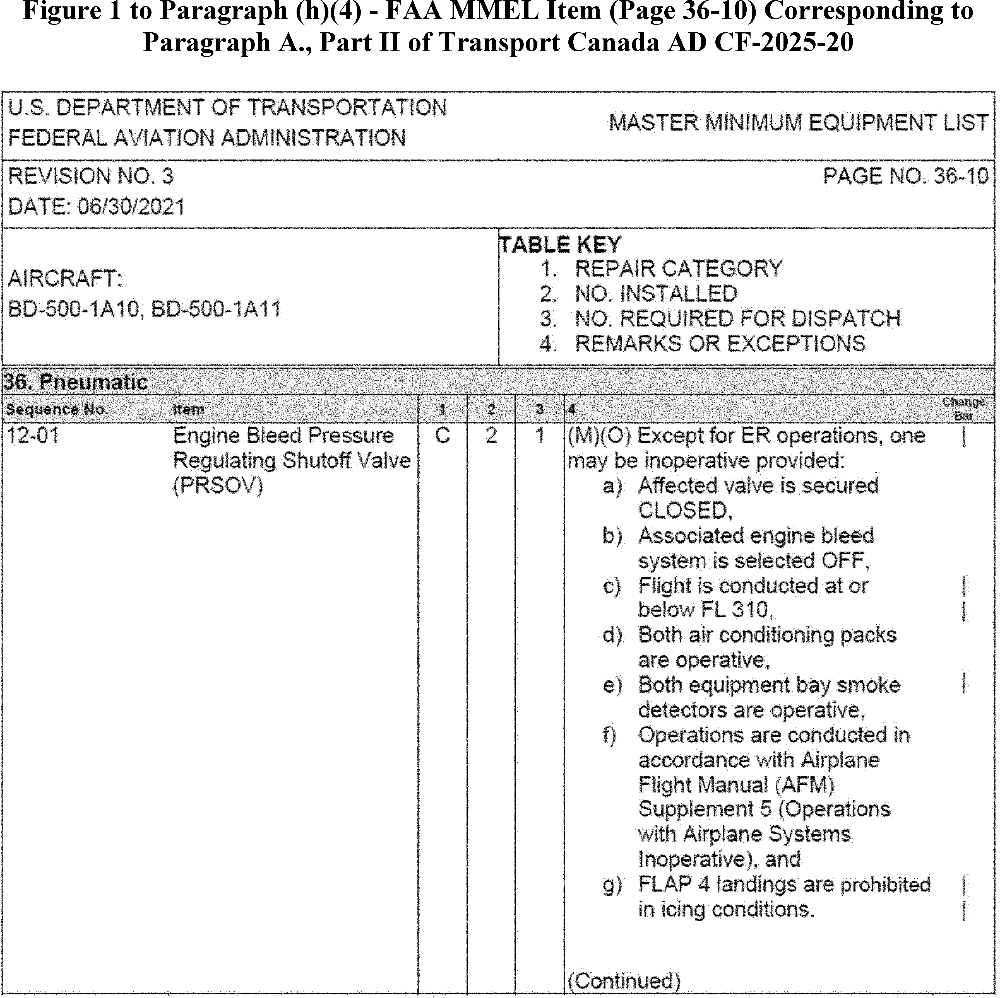
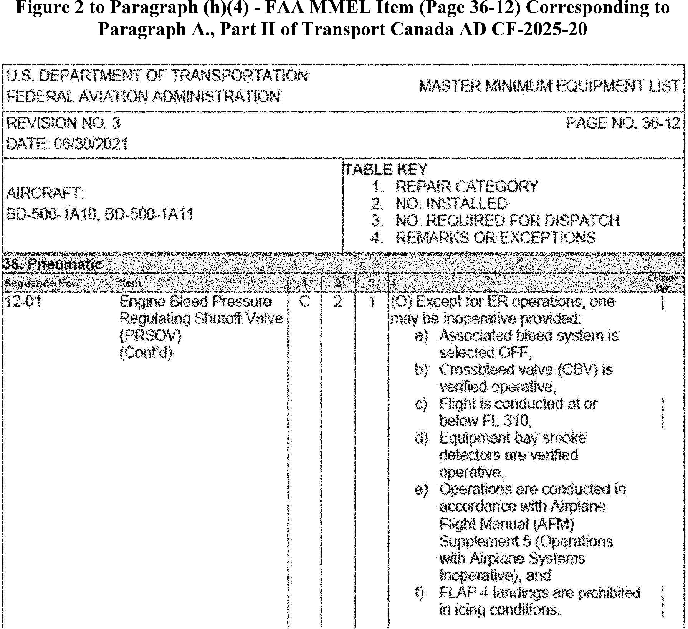
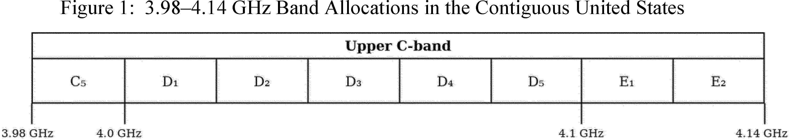
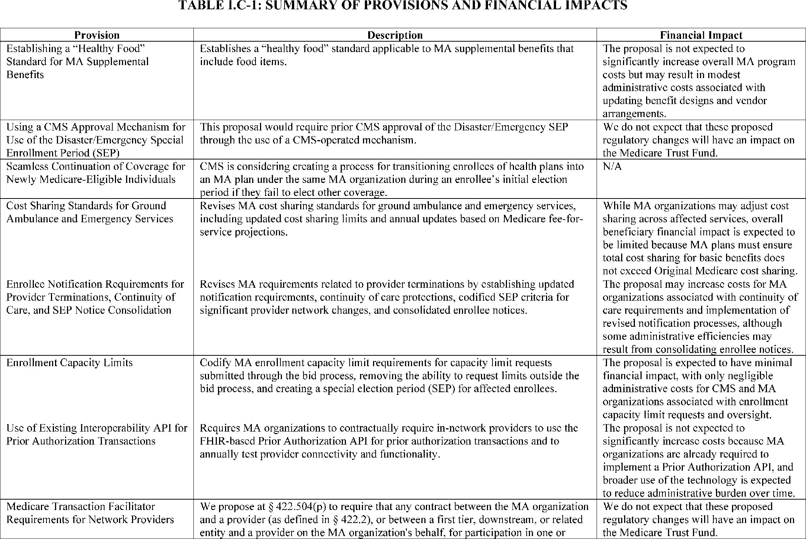
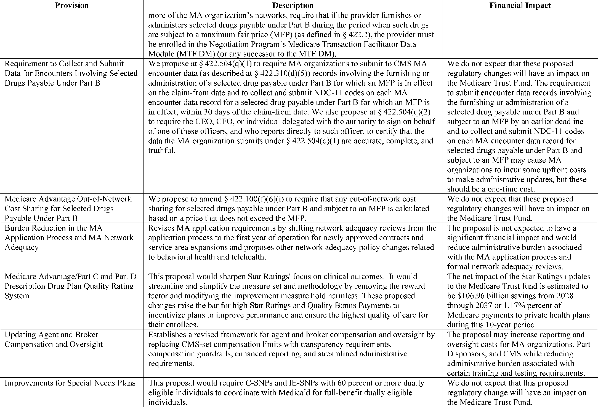

Daily Digest — 2026-11-25
Full observed listing for this day — the items our collectors observed for this publication day, mechanical rules applied, frozen at end of day; releases their publishers date on other days are counted there, not listed. This digest is the canonical record.
All items below cite the govinfo package (and granule, where applicable) they summarize. Selection is mechanical; each item states the rule that included it. See the Coverage Statement at the end for a full accounting of what was published, what was summarized, and what was excluded and why.
Day in Review
The digest carries 38 House and 4 Senate Congressional Record items, along with 44 House and 17 Senate bill introductions. None of the items summarized here describes a recorded vote. Seven bills reported in the House appear, including the American Reserve Modernization Act of 2026, which would direct Treasury to establish a Strategic Bitcoin Reserve. The House Record of November 24 prints foreign travel expenditure reports and executive communications EC-5248 through EC-5275.
On the executive side, the digest carries 13 final rules, 9 proposed rules, 2 presidential documents and a Thanksgiving Day proclamation dated November 24. Executive Order 14439 requires federal contractors to notify the White House of congressional requests concerning their executive-branch work. Final rules include three NCUA actions, seven Entity List additions and a CDC extension of an interim final rule on foreign quarantine. Proposed rules cover Medicare Advantage and Part D changes for contract year 2028 and endangered status for two shiner fish species.
The digest carries 77 appellate opinions. The First Circuit vacated summary judgment in a False Claims Act case over Paycheck Protection Program loans. The Fourth Circuit denied E-Liquid Brands' petitions against FDA marketing denial orders. In a separate case, it held that the Lilly Ledbetter Act does not reach pay reductions from demotion. The Fifth Circuit affirmed dismissal of Jill Hines's suit against Stanford for lack of standing. The Seventh Circuit held that a police chief was not entitled to qualified immunity on a pre-termination hearing claim.
Composed from the summarized items below and the day's mechanical counts; all specifics are cited in their sections.
1. Congressional Floor Activity
Two Congressional Record items from November 24, 2026: foreign travel expenditure reports for Q3 and Q4 2026, and 28 executive communications, EC-5248 through EC-5275, referred to committees.
Source: Congressional Record (CREC), issue observed 2026-11-25, covering proceedings of 2026-11-24. Published by govinfo 2026-11-25T10:08:48Z; observed by our collector 2026-11-25T10:10:08Z. Total issue size: 59 granule(s).
1.1 Senate
No Senate floor items met the selection thresholds. 4 floor granule(s) are accounted for in the Coverage Statement.
1.2 House of Representatives
In plain terms Two Congressional Record items from November 24, 2026: foreign travel expenditure reports for Q3 and Q4 2026, and 28 executive communications, EC-5248 through EC-5275, referred to committees.
- Expenditure Reports Concerning Official Foreign Travel — The Congressional Record of November 24, 2026 prints expenditure reports for official foreign travel in the third and fourth quarters of 2026, filed under Public Law 95-384 by the House Committee on the Budget and the House Committee on Financial Services. The Budget Committee report lists one Member's travel to Iceland, Finland, and Ireland from August 23 to 30, 2026, with a total of 4,907.91 in U.S. dollar equivalents. The Financial Services Committee report lists per diem, transportation, and other expenditures for Members and staff traveling to the United Kingdom, Belgium, Switzerland, Sweden, and Norway in July and August 2026, and the listing is truncated in the provided text.
- In plain terms The November 24, 2026 Congressional Record prints committee reports of 2026 official foreign travel expenditures, including one Member's August 23 to 30 trip to Iceland, Finland, and Ireland totaling 4,907.91 U.S. dollar equivalents.
- Included because: CREC-SEL-01 — floor item ≥ threshold floor time (43,772 characters) (document dated 2026-11-24)
- Source: CREC-2026-11-24 / CREC-2026-11-24-pt1-PgH6327-9 (opens in a new tab)
- Executive Communications, ETC. — The Congressional Record of November 24, 2026 prints executive communications EC-5248 through EC-5275, which were referred to House committees under clause 2 of rule XIV. The communications include a Department of War letter on authorization for officers to wear brigadier general insignia, Federal Communications Commission and Federal Aviation Administration final rules submitted under 5 U.S.C. 801(a)(1)(A), Department of State arms export transmittals, fiscal year 2026 Agency Financial Reports from several agencies, and Department of Justice notices concerning a decision not to appeal a district court ruling and a decision to confess error in a case before the D.C. Circuit. The listing is truncated in the provided text after EC-5275.
- In plain terms The November 24, 2026 Congressional Record prints executive communications EC-5248 through EC-5275 referred to House committees, including a Department of War brigadier general insignia authorization, FCC and FAA final rules, State Department arms export transmittals, and DOJ notices.
- Included because: CREC-SEL-01 — floor item ≥ threshold floor time (23,358 characters) (document dated 2026-11-24)
- Source: CREC-2026-11-24 / CREC-2026-11-24-pt1-PgH6330-2 (opens in a new tab)
1.3 Recorded Votes
No recorded votes were published in this issue of the Congressional Record.
2. Legislation
7 House committee-reported bills, led by the American Reserve Modernization Act on a Strategic Bitcoin Reserve; the others cover annuity forms, civil investigative demands, payment scams, evictions, and lending.
Source: Congressional Bills (BILLS), text versions published 2026-11-25 to 2026-11-25.
2.1 Counts by Stage
| Stage (bill text version) | Count |
|---|---|
| Introduced (ih/is) | 61 |
| Reported (rh/rs) | 7 |
| Engrossed (eh/es) | 0 |
| Enrolled (enr) | 0 |
| Other versions | 0 |
| Total bill texts published | 68 |
2.2 Bills Listed by Mechanical Rule
In plain terms 7 House committee-reported bills, led by the American Reserve Modernization Act on a Strategic Bitcoin Reserve; the others cover annuity forms, civil investigative demands, payment scams, evictions, and lending.
Bills below are listed because they matched at least one listing rule; the matching rule is stated per item. All other bill texts are counted above and accounted for in the Coverage Statement.
- H. R. 10234 (rh) — 119 HR 10234 RH: Consumer-Led Enhancement of Annuity and insurance Registration Forms Act — The reported bill, titled the Consumer-Led Enhancement of Annuity and insurance Registration Forms Act or the CLEAR Forms Act, would add section 6A to the Securities Act of 1933, defining covered insurance contracts such as contingent deferred annuities and registered index-linked life insurance. It directs the Securities and Exchange Commission to propose rules within 12 months and finalize them within 30 months of enactment to establish registration forms for these contracts, including investor testing for contingent deferred annuities. If the rules are not finalized within 36 months, those contracts may be registered on existing forms specified in the bill until the Commission finalizes the rules.
- In plain terms The CLEAR Forms Act directs the Securities and Exchange Commission to propose rules within 12 months and finalize them within 30 months of enactment to set registration forms for annuity and insurance contracts.
- Included because: BILLS-SEL-01 — reached stage: reported/enrolled/calendar (document dated 2026-11-24)
- Source: BILLS-119hr10234rh (opens in a new tab)
- H. R. 1653 (rh) — 119 HR 1653 RH: Civil Investigative Demand Reform Act of 2026 — The reported bill, titled the Civil Investigative Demand Reform Act of 2026, amends section 1052 of the Consumer Financial Protection Act of 2010 to limit civil investigative demands to violations occurring within 6 years and to require that demands include specific reference to particular facts. It allows an attorney advising a recipient to submit questions to the Bureau, sets response and return-date timing for those questions, and extends confidential treatment to petitions submitted to the Bureau. The bill also expands the grounds for setting aside a demand to include constitutional or legal rights and burdensome or duplicative demands, and makes the Bureau's denial of a petition to modify or set aside a demand subject to judicial review.
- In plain terms The Civil Investigative Demand Reform Act of 2026 limits demands to violations within 6 years, requires them to specifically reference particular facts, and makes the Bureau's denial of petitions to modify or set aside a demand reviewable by a court.
- Included because: BILLS-SEL-01 — reached stage: reported/enrolled/calendar (document dated 2026-11-24)
- Source: BILLS-119hr1653rh (opens in a new tab)
- H. R. 4936 (rh) — 119 HR 4936 RH: Taskforce for Recognizing and Averting Payment Scams Act — The reported bill, titled the Taskforce for Recognizing and Averting Payment Scams Act or the TRAPS Act, directs the Secretary of the Treasury to establish within 90 days a Task Force for Recognizing and Averting Payment Scams. The Task Force's membership includes specified federal officials, along with appointed representatives from financial institutions, digital payment networks, consumer protection organizations, and other stakeholders, and it is required to meet at least three times in the first year after enactment. The Task Force must submit a report with strategic and legislative recommendations within one year of its establishment, provide annual updates, and terminate 3 years after it submits that initial report.
- In plain terms The TRAPS Act requires the Treasury Secretary to establish a payment scam task force within 90 days, have it report within one year of its establishment, and end it 3 years after that initial report.
- Included because: BILLS-SEL-01 — reached stage: reported/enrolled/calendar (document dated 2026-11-24)
- Source: BILLS-119hr4936rh (opens in a new tab)
- H. R. 5889 (rh) — 119 HR 5889 RH: Eviction Helpline Act — The reported bill, titled the Eviction Helpline Act, directs the Secretary of Housing and Urban Development to establish within 1 year of enactment a hotline that provides tenants of covered federally assisted rental dwelling units with counseling, resources, and referrals related to eviction. The bill requires that information about the hotline be published in common areas of federally assisted rental dwellings and through other means the Secretary determines appropriate. Covered units are defined by reference to specified HUD assistance programs and to properties with federally backed mortgage loans, and the program terminates 7 years after enactment.
- In plain terms The Eviction Helpline Act directs HUD to establish, within 1 year of enactment, a hotline offering tenants of covered federally assisted rental units counseling and referrals about eviction, ending 7 years after enactment.
- Included because: BILLS-SEL-01 — reached stage: reported/enrolled/calendar (document dated 2026-11-24)
- Source: BILLS-119hr5889rh (opens in a new tab)
- H. R. 7030 (rh) — 119 HR 7030 RH: Securing Facilities for Mental Health Services Act — The reported bill, titled the Securing Facilities for Mental Health Services Act, amends section 242(b)(1) of the National Housing Act by striking subparagraph (B) and redesignating subparagraph (C) as subparagraph (B), which provides parity for licensed hospitals in access to the hospital mortgage insurance program. The amendments apply for the period beginning 9 months after enactment and ending 5 years after enactment. The bill also requires the Secretary of Housing and Urban Development to submit a report to the House Committee on Financial Services and the Senate Committee on Banking, Housing, and Urban Affairs within 5 years of enactment assessing the results and effectiveness of the program expansion.
- In plain terms The Securing Facilities for Mental Health Services Act gives licensed hospitals equal access to the hospital mortgage insurance program for the period from 9 months to 5 years after enactment, and requires a report within 5 years.
- Included because: BILLS-SEL-01 — reached stage: reported/enrolled/calendar (document dated 2026-11-24)
- Source: BILLS-119hr7030rh (opens in a new tab)
- H. R. 7866 (rh) — 119 HR 7866 RH: American Lending Fairness Act of 2026 — The reported bill, titled the American Lending Fairness Act of 2026, amends section 27 of the Federal Deposit Insurance Act and section 205(g) of the Federal Credit Union Act so that, if a State adopts a law or certifies voter approval stating that the State does not want the federal interest rate exportation provisions to apply to loans made by its chartered institutions, those provisions will not apply to such loans made after that date. The bill repeals section 525 of the Depository Institutions Deregulation and Monetary Control Act of 1980. It also provides that the amendments govern the legal effect of any State law adopted or certification made under section 525 before the date of enactment.
- In plain terms The American Lending Fairness Act of 2026 stops federal interest rate exportation rules applying to chartered institutions' loans made after a State opts out by law or voter-approved certification, and repeals section 525 of a 1980 law.
- Included because: BILLS-SEL-01 — reached stage: reported/enrolled/calendar (document dated 2026-11-24)
- Source: BILLS-119hr7866rh (opens in a new tab)
- H. R. 8957 (rh) — 119 HR 8957 RH: American Reserve Modernization Act of 2026 — H.R. 8957, the American Reserve Modernization Act of 2026, as reported by the House Committee on Financial Services with amendments, would direct the Secretary of the Treasury to establish a Strategic Bitcoin Reserve and a Digital Asset Stockpile within the Department of the Treasury no later than 180 days after enactment, for the custody of qualifying Bitcoin and other qualifying digital assets owned by the Federal Government. It requires annual reports to the House Financial Services and Senate Banking Committees, security measures, transfer of qualifying assets to Treasury title, and sales of reserve Bitcoin only under a Treasury rule, and it bars sale of digital assets resulting from a fork or airdrop for one year. The text as provided is truncated before the remaining provisions.
- In plain terms The American Reserve Modernization Act of 2026 directs the Treasury Secretary to establish a Strategic Bitcoin Reserve and Digital Asset Stockpile within 180 days of enactment and bars selling fork or airdrop assets for one year.
- Included because: BILLS-SEL-01 — reached stage: reported/enrolled/calendar (document dated 2026-11-24)
- Source: BILLS-119hr8957rh (opens in a new tab)
3. Federal Register
13 rules, led by DEA's renaming of narcotic treatment programs to opioid treatment programs; the rest are aviation directives, Alaska fishery closures, NCUA changes, and a Coast Guard safety zone.
Source: Federal Register (FR), issue of 2026-11-25.
3.1 Counts by Document Type
| Document type | Count |
|---|---|
| Rules | 13 |
| Proposed rules | 9 |
| Notices | 48 |
| Presidential documents | 2 |
| Total FR documents | 72 |
3.2 Rules Published
In plain terms 13 rules, led by DEA's renaming of narcotic treatment programs to opioid treatment programs; the rest are aviation directives, Alaska fishery closures, NCUA changes, and a Coast Guard safety zone.
DEPARTMENT OF COMMERCE
- Fisheries of the Exclusive Economic Zone Off Alaska; Atka Mackerel in the Bering Sea Subarea and Eastern Aleutian District of the Bering Sea and Aleutian Islands Management Area (2026-23989; 50 CFR Part 679) — NMFS is prohibiting directed fishing for Atka mackerel in the Bering Sea subarea and Eastern Aleutian District (BS/EAI) of the Bering Sea and Aleutian Islands management area (BSAI) by vessels participating in the BSAI trawl limited access sector fishery. This action is necessary to prevent exceeding the 2026 total allowable catch (TAC) of Atka mackerel in the BS/EAI allocated to vessels participating in the BSAI trawl limited access sector fishery. Action: Temporary rule; closure. Dates: Effective 1200 hours, Alaska local time (A.l.t.), November 23, 2026, through 2400 hours, A.l.t., December 31, 2026.
- In plain terms The National Marine Fisheries Service prohibits targeted fishing for Atka mackerel in the Bering Sea subarea and Eastern Aleutian District by trawl limited access sector vessels to prevent exceeding their 2026 total allowable catch.
- Included because: FR-SEL-01 — document type: final rule (all listed)
- Source: FR-2026-11-25 / 2026-23989 (opens in a new tab)
- Fisheries of the Exclusive Economic Zone Off Alaska; Pacific Ocean Perch in the Eastern Aleutian District of the Bering Sea and Aleutian Islands Management Area (2026-23993; 50 CFR Part 679) — NMFS is prohibiting directed fishing for Pacific ocean perch in the Eastern Aleutian district (EAI) of the Bering Sea and Aleutian Islands management area (BSAI) by vessels participating in the BSAI trawl limited access sector fishery. This action is necessary to prevent exceeding the 2026 total allowable catch (TAC) of Pacific ocean perch in the EAI allocated to vessels participating in the BSAI trawl limited access sector fishery. Action: Temporary rule; closure. Dates: Effective 1200 hours, Alaska local time (A.l.t.), November 23, 2026, through 2400 hours, A.l.t., December 31, 2026.
- In plain terms The National Marine Fisheries Service prohibits targeted fishing for Pacific ocean perch in the Eastern Aleutian district by trawl limited access sector vessels to prevent exceeding their 2026 total allowable catch.
- Included because: FR-SEL-01 — document type: final rule (all listed)
- Source: FR-2026-11-25 / 2026-23993 (opens in a new tab)
- Additions to the Entity List (2026-23999; 15 CFR Part 744) — In this rule, the Bureau of Industry and Security (BIS) amends the Export Administration Regulations (EAR) by adding 7 entities to the Entity List, under the destinations of Malaysia, Singapore, and Thailand. These entities have been determined by the U.S. Government to be acting contrary to the national security or foreign policy interests of the United States. Action: Final rule. Dates: This rule is effective November 23, 2026.
- In plain terms The Bureau of Industry and Security adds 7 entities in Malaysia, Singapore, and Thailand to the Entity List under the Export Administration Regulations, determining they act contrary to U.S. national security or foreign policy interests.
- Included because: FR-SEL-01 — document type: final rule (all listed)
- Source: FR-2026-11-25 / 2026-23999 (opens in a new tab)
DEPARTMENT OF HEALTH AND HUMAN SERVICES
- Control of Communicable Diseases; Foreign Quarantine (2026-23990; 42 CFR Part 71) — The Centers for Disease Control and Prevention (CDC), in the Department of Health and Human Services (HHS), is extending the expiration date of the interim final rule published on May 27, 2026. This interim final rule removes an exemption for lawful permanent residents from application of regulations implementing section 362 of the Public Health Service (PHS) Act, which authorizes the Secretary, acting through the CDC Director or other delegate, to suspend the introduction of persons from designated countries or places, if required, in the interest of public health. Action: Notification; extension of interim final rule—expiration date. Dates: Effective date: This Federal Register document is effective upon publication. Expiration date: Unless extended further, the amendment to 42 CFR 71.40(f) made by the interim final rule will cease to be in effect on the earlier of (1) six months from the publication of this Federal Register document, or (2) when the HHS Secretary determines there is no longer a need for the interim final rule. The Secretary will publish a document in the Federal Register announcing the expiration date.
- In plain terms The CDC extends the expiration date of its May 27, 2026 temporary final rule, which removed a lawful permanent resident exemption from regulations under section 362 of the Public Health Service Act on suspending entry from designated countries.
- Included because: FR-SEL-01 — document type: final rule (all listed)
- Source: FR-2026-11-25 / 2026-23990 (opens in a new tab)
DEPARTMENT OF HOMELAND SECURITY
- Safety Zone; Brownsville Ship Channel, Brownsville, TX (2026-24010; 33 CFR Part 165) — The Coast Guard is establishing a temporary safety zone for navigable waters on the Brownsville Ship Channel. The safety zone is needed to protect personnel, vessels, and the marine environment from potential hazards associated with an over-sized dead ship tow transiting the area. Entry of vessels or persons into this zone is prohibited unless specifically authorized by the Captain of the Port, Sector Corpus Christi, or their designated representative. Action: Temporary final rule. Dates: This rule is effective without actual notice from November 25, 2026 through December 1, 2026. For the purposes of enforcement, actual notice will be used from November 24, 2026 until November 25, 2026. The rule will be subject to enforcement on only one day during the effective period when the vessel transits from the sea buoy to the International Shipbreaking Limited dock.
- In plain terms The Coast Guard is establishing a temporary safety zone on the Brownsville Ship Channel around an oversized dead ship tow; entry is barred unless the Captain of the Port, Sector Corpus Christi, or a representative authorizes it.
- Included because: FR-SEL-01 — document type: final rule (all listed)
- Source: FR-2026-11-25 / 2026-24010 (opens in a new tab)
DEPARTMENT OF JUSTICE
- Renaming Narcotic Treatment Program (NTP) to Opioid Treatment Program (OTP) in DEA Regulations (2026-23962; 21 CFR Parts 1300, 1301, 1304, 1305, 1306, and 1317) — This final rule updates Drug Enforcement Administration regulations to change the name of Narcotic Treatment Programs to Opioid Treatment Programs. This action is a nomenclature change and makes no substantive changes to the definition of a narcotic drug in the Controlled Substances Act or the definition of a narcotic treatment program in the implementing regulations. Action: Final rule, technical amendment. Dates: This final rule is effective November 25, 2026.
- In plain terms The DEA's final rule renames Narcotic Treatment Programs to Opioid Treatment Programs in its regulations as a name change only, with no substantive change to the definitions of narcotic drug or narcotic treatment program.
- Included because: FR-SEL-01 — document type: final rule (all listed)
- Source: FR-2026-11-25 / 2026-23962 (opens in a new tab)
DEPARTMENT OF TRANSPORTATION
- Airworthiness Directives; Pilatus Aircraft Ltd. Airplanes (2026-23963; 14 CFR Part 39) — The FAA is superseding Airworthiness Directive (AD) 2021-11-08, which applied to all Pilatus Aircraft Ltd. (Pilatus) Model PC-6, PC-6-H1, PC-6-H2, PC-6/350, PC-6/350-H1, PC-6/350-H2, PC-6/A, PC-6/A-H1, PC-6/A-H2, PC-6/B-H2, PC-6/B1-H2, PC-6/B2-H2, PC-6/B2-H4, PC-6/C-H2, and PC-6/C1-H2 airplanes. AD 2021-11-08 required revising the airworthiness limitations section (ALS) of the existing aircraft maintenance manual (AMM) or instructions for continued airworthiness (ICA) to incorporate new airworthiness limitations and adding an additional eddy current inspection of the fuselage wing fittings and wing-to-fuselage fittings if the last inspection was performed using an earlier version of the required material. Since the FAA issued AD 2021-11-08, the FAA has determined that new or more restrictive airworthiness limitations are necessary. This AD requires revising the ALS of the existing AMM or ICA for these airplanes. The FAA is issuing this AD to address the unsafe condition on these products. Action: Final rule. Dates: This AD is effective December 30, 2026. The Director of the Federal Register approved the incorporation by reference of a certain publication listed in this AD as of December 30, 2026.
- In plain terms The FAA is replacing Airworthiness Directive 2021-11-08 for listed Pilatus PC-6 airplanes, requiring revision of their airworthiness limitations section to incorporate new or more restrictive limitations.
- Included because: FR-SEL-01 — document type: final rule (all listed)
- Source: FR-2026-11-25 / 2026-23963 (opens in a new tab)
- Airworthiness Directives; Airbus Canada Limited Partnership (Type Certificate Previously Held by C Series Aircraft Limited Partnership (CSALP); Bombardier, Inc.) Airplanes (2026-23970; 14 CFR Part 39) — The FAA is adopting a new airworthiness directive (AD) for certain Airbus Canada Limited Partnership Model BD-500-1A10 and BD-500-1A11 airplanes. This AD was prompted by a report of multiple in-service failures of pressure regulating shutoff valves (PRSOVs). This AD requires revising the existing airplane flight manual (AFM) to incorporate procedures for reducing the thrust lever or shutting down the engine when the BLEED LEAK caution message is persistent, prohibits operation in known or forecasted icing conditions under certain minimum equipment list (MEL) provisions where the only operative PRSOV is an affected part, and requires replacement of affected PRSOVs with improved PRSOVs. The FAA is issuing this AD to address the unsafe condition on these products. Action: Final rule. Dates: This AD is effective December 30, 2026. The Director of the Federal Register approved the incorporation by reference of a certain publication listed in this AD as of December 30, 2026.
- In plain terms The FAA adopts an airworthiness directive for certain Airbus Canada BD-500-1A10 and -1A11 airplanes after multiple in-service failures of pressure regulating shutoff valves, requiring new flight manual procedures and replacement of affected valves.
- Included because: FR-SEL-01 — document type: final rule (all listed)
- Source: FR-2026-11-25 / 2026-23970 (opens in a new tab)

Source graphic 1 of 3 from 2026-23970.
Source graphic 2 of 3 from 2026-23970.- Graphics not rendered here: 1 of 3 — see the source PDF (opens in a new tab).
- Establishment of Class E Airspace; Trading Bay Production Airport, Trading Bay, AK (2026-24018; 14 CFR Part 71) — This action establishes Class E airspace extending upward from 700 feet above the surface at Trading Bay Production Airport, Trading Bay, AK. This action supports the safety and management of instrument flight rules (IFR) operations at the airport. Action: Final rule. Dates: Effective date 0901 UTC, February 18, 2027. The Director of the Federal Register approves this incorporation by reference action under 1 CFR part 51, subject to the annual revision of FAA Order JO 7400.11 and publication of conforming amendments.
- In plain terms The FAA is creating a section of controlled airspace reaching up from 700 feet above ground at Trading Bay Production Airport in Trading Bay, Alaska, to support safe management of instrument flight rules operations there.
- Included because: FR-SEL-01 — document type: final rule (all listed)
- Source: FR-2026-11-25 / 2026-24018 (opens in a new tab)
FEDERAL COMMUNICATIONS COMMISSION
- Auction of Flexible-Use Licenses in the Upper C-Band for Next-Generation Wireless Services; Notice and Filing Requirements, Minimum Opening Bids, Upfront Payments, and Other Procedures for Auction 115; Bidding Scheduled To Begin April 27, 2027 (2026-24013; 47 CFR Parts 1 and 27) — This document summarizes the procedures, deadlines, upfront payment, and minimum opening bid amounts adopted in the Auction 115 Procedures Public Notice for the Federal Communications Commission's (Commission) upcoming auction of 3,248 new flexible-use licenses in the 3.98-4.14 GHz portion of the Upper C-band. The Auction 115 Procedures Public Notice summarized here provides details regarding the procedures, terms, conditions, dates, and deadlines governing participation in Auction 115 bidding, as well as an overview of the post-auction application and payment processes. Action: Final action; requirements and procedures. Dates: Applications to participate in Auction 115 must be submitted prior to 6:00 p.m. Eastern Time (ET) on January 20, 2027. Upfront payments for Auction 115 must be received prior to 6:00 p.m. ET on March 18, 2027. Bidding in Auction 115 is scheduled to start on April 27, 2027.
- In plain terms The FCC summarizes the rules, deadlines, upfront payments, and minimum opening bids for Auction 115, offering 3,248 wireless licenses in the 3.98-4.14 GHz Upper C-band, with bidding set to begin April 27, 2027.
- Included because: FR-SEL-01 — document type: final rule (all listed)
- Source: FR-2026-11-25 / 2026-24013 (opens in a new tab)

Source graphic 1 of 1 from 2026-24013.
NATIONAL CREDIT UNION ADMINISTRATION
- Thresholds Increase for the Major Assets Prohibition of the Depository Institution Management Interlocks Act Rule (2026-23994; 12 CFR Part 711) — The NCUA Board (Board) is issuing a final rule increasing two thresholds in its regulation implementing management official interlocks for purposes of the Depository Institution Management Interlocks Act (DIMIA). DIMIA authorizes NCUA to adjust the major assets prohibition thresholds through regulation to respond to inflation or market changes. This final rule increases both major assets prohibition thresholds to $10 billion to account for changes in the United States banking market since 1996. Additionally, the final rule removes a presumption related to depository institutions controlled or managed by persons who are members of a minority group or women. Action: Final rule. Dates: This final rule is effective on December 28, 2026.
- In plain terms The NCUA Board's final rule raises both major asset thresholds in its management interlocks regulation to $10 billion to reflect U.S. banking market changes since 1996, and removes a presumption on institutions controlled or managed by members of a minority group or women.
- Included because: FR-SEL-01 — document type: final rule (all listed)
- Source: FR-2026-11-25 / 2026-23994 (opens in a new tab)
- Corporate Credit Unions (2026-23996; 12 CFR Part 704; RIN 3133-AF73) — The NCUA Board (Board) is amending its regulations for corporate credit unions by removing the requirement that a corporate credit union's asset and liability management committee (ALCO) must have at least one member who is also a member of the corporate credit union's board of directors. The final rule also removes filing requirements related to a corporate credit union's annual report and any management letter or other report issued by its independent public accountant. The intended effect is to reduce unnecessary regulatory burden and provide corporate credit unions with greater flexibility. Action: Final rule. Dates: This final rule is effective on December 28, 2026.
- In plain terms The NCUA Board's final rule for corporate credit unions drops the requirement that their asset and liability management committee include a board member and removes annual report and independent accountant management letter filing requirements to reduce regulatory burden.
- Included because: FR-SEL-01 — document type: final rule (all listed)
- Source: FR-2026-11-25 / 2026-23996 (opens in a new tab)
- Supervisory Committee Audits And Verifications (2026-23997; 12 CFR Part 715) — The NCUA Board (Board) is amending its regulations governing supervisory committee audits to eliminate unnecessary, redundant, and overly prescriptive provisions. The final rule is necessary to reduce regulatory burden, increase operational flexibility for federally insured credit unions (FICUs), and streamline the rules by removing requirements that are outdated or duplicative of other authorities. The intended effect of the final rule is to simplify compliance for FICUs without compromising the integrity of the audit process. Action: Final rule. Dates: This final rule is effective on December 28, 2026.
- In plain terms The NCUA Board's final rule amends supervisory committee audit rules to remove redundant and overly prescriptive provisions, reducing burden and increasing flexibility for federally insured credit unions without compromising audit integrity.
- Included because: FR-SEL-01 — document type: final rule (all listed)
- Source: FR-2026-11-25 / 2026-23997 (opens in a new tab)
3.3 Proposed Rules Published
In plain terms 9 proposals, led by a 2028 Medicare Advantage rule and endangered-status listings for two shiners; the rest are aircraft airworthiness directives, airspace, and railbanking items.
DEPARTMENT OF HEALTH AND HUMAN SERVICES
- Medicare Program; Contract Year 2028 Policy and Technical Changes to the Medicare Advantage Program, Medicare Prescription Drug Benefit Program, and Programs of All-Inclusive Care for the Elderly (2026-23960; 42 CFR Parts 422, 423, 460, and 516) — This proposed rule would revise the Medicare Advantage (Part C), Medicare Prescription Drug Benefit (Part D), and Programs of All-Inclusive Care for the Elderly regulations to implement changes related to marketing and communications, drug coverage, enrollment processes, special needs plans, and other programmatic areas. Additionally, it would establish and implement a mandatory Medicare Advantage (MA) CMS Innovation Center model. Action: Proposed rule. Dates: To be assured consideration, comments must be received at one of the addresses provided below, no later than 5 p.m. Eastern Time on January 19, 2027.
- In plain terms A proposed rule for Contract Year 2028 would revise Medicare Advantage, Medicare Prescription Drug Benefit (Part D), and All-Inclusive Care for the Elderly regulations on marketing, enrollment, and special needs plans, and establish a mandatory Medicare Advantage CMS Innovation Center model.
- Included because: FR-SEL-02 — document type: proposed rule (all listed)
- Source: FR-2026-11-25 / 2026-23960 (opens in a new tab)

Source graphic 1 of 79 from 2026-23960.
Source graphic 2 of 79 from 2026-23960.- Graphics not rendered here: 77 of 79 — see the source PDF (opens in a new tab).
- VIAVI Solutions; Filing of Color Additive Petition (2026-24009; 21 CFR Part 73) — The Food and Drug Administration (FDA or we) is announcing that we have filed a color additive petition, submitted by VIAVI Solutions, proposing that the color additive regulations be amended to provide for the safe use of magnesium fluoride-aluminum flake for use in nail polish at a maximum level of 16 percent of the final product. Action: Notification of petition. Dates: The color additive petition was filed on November 5, 2026. Either electronic or written comments on the petitioner's environmental assessment must be submitted by December 28, 2026.
- In plain terms The FDA is announcing it has filed a color additive petition from VIAVI Solutions proposing safe use of magnesium fluoride-aluminum flake in nail polish at up to 16 percent of the final product.
- Included because: FR-SEL-02 — document type: proposed rule (all listed)
- Source: FR-2026-11-25 / 2026-24009 (opens in a new tab)
DEPARTMENT OF THE INTERIOR
- Endangered and Threatened Wildlife and Plants; Endangered Species Status for Peppered Shiner (2026-23968; 50 CFR Part 17) — We, the U.S. Fish and Wildlife Service (Service), propose to list the peppered shiner ( Miniellus perpallidus ), a fish species from southeast Oklahoma and southern Arkansas, as an endangered species under the Endangered Species Act of 1973, as amended (Act). This determination also serves as our 12-month finding on a petition to list the peppered shiner. After a review of the best available scientific and commercial information, we find that listing the species is warranted. Accordingly, we propose to list the peppered shiner as an endangered species under the Act. If finalized as proposed, this rule would add this species to the List of Endangered and Threatened Wildlife and extend the Act's protections to the species. Action: Proposed rule. Dates: We will accept comments received or postmarked on or before January 25, 2027. Comments submitted electronically using the Federal eRulemaking Portal (see ADDRESSES ) must be received by 11:59 p.m. eastern time on the closing date. We must receive requests for a public hearing, in writing, at the address shown in FOR FURTHER INFORMATION CONTACT by January 11, 2027. To ensure your comment is received and considered, you must submit it using one of the methods identified in the ADDRESSES section of this document. Comments submitted through any method not authorized in this document, or sent to an address not listed here, will not be considered.
- In plain terms The Fish and Wildlife Service proposes listing the peppered shiner, a fish from southeast Oklahoma and southern Arkansas, as endangered under the Endangered Species Act, with protections extended if finalized.
- Included because: FR-SEL-02 — document type: proposed rule (all listed)
- Source: FR-2026-11-25 / 2026-23968 (opens in a new tab)
- Endangered and Threatened Wildlife and Plants; Endangered Species Status for the Rio Grande Shiner (2026-23969; 50 CFR Part 17) — We, the U.S. Fish and Wildlife Service (Service), propose to list the Rio Grande shiner ( Notropis jemezanus ), a fish species from the Rio Grande Basin in New Mexico, Texas, and Mexico, as an endangered species under the Endangered Species Act of 1973, as amended (Act). This determination also serves as our 12-month finding on a petition to list the Rio Grande shiner. After a review of the best scientific and commercial data available, we find that listing the species is warranted. If we finalize this rule as proposed, it would add this species to the List of Endangered and Threatened Wildlife and extend the Act's protections to the species. We find that critical habitat for this species is not determinable at this time. Action: Proposed rule. Dates: Comments will be accepted on or before January 25, 2027. Comments submitted electronically using the Federal eRulemaking Portal (see ADDRESSES , below) must be received by 11:59 p.m. eastern time on the closing date. To ensure your comment is received and considered, you must submit it using one of the methods identified in the ADDRESSES section of this document. Comments submitted through any method not authorized in this document, or sent to an address not listed here, will not be considered. We must receive requests for a public hearing, in writing, by January 11, 2027 either at http://www.regulations.gov at FWS-R2-ES-2026-2278, which is the docket number for this rulemaking, or at the address shown in FOR FURTHER INFORMATION CONTACT .
- In plain terms The Fish and Wildlife Service proposes listing the Rio Grande shiner, a fish from the Rio Grande Basin in New Mexico, Texas, and Mexico, as endangered, and finds its critical habitat not determinable at this time.
- Included because: FR-SEL-02 — document type: proposed rule (all listed)
- Source: FR-2026-11-25 / 2026-23969 (opens in a new tab)
DEPARTMENT OF TRANSPORTATION
- Establishment of Class E Airspace; Canton, TX (2026-23977; 14 CFR Part 71) — This action proposes to establish Class E airspace at Mother Frances-Canton Heliport, Canton, TX. The FAA is proposing this action to support new instrument procedures and instrument flight rule (IFR) operations. Action: Notice of proposed rulemaking (NPRM). Dates: Comments must be received on or before January 11, 2027.
- In plain terms The FAA proposes establishing Class E airspace at Mother Frances-Canton Heliport in Canton, Texas, to support new instrument procedures and instrument flight rule operations.
- Included because: FR-SEL-02 — document type: proposed rule (all listed)
- Source: FR-2026-11-25 / 2026-23977 (opens in a new tab)
- Airworthiness Directives; The Boeing Company Airplanes (2026-23979; 14 CFR Part 39) — The FAA proposes to adopt a new airworthiness directive (AD) for certain The Boeing Company Model 757-200 and -300 series airplanes. This proposed AD was prompted by a report of missing and/or incorrectly installed lockwire on backshells found during engineering validation tests in the wing leading edge and engine struts for high intensity radiated field (HIRF)/lightning protection features. This proposed AD would require inspection of the backshells at the left- and right-wing leading edge and nacelle strut for missing and incorrectly installed lockwire and applicable on-condition actions. The FAA is proposing this AD to address the unsafe condition on these products. Action: Notice of proposed rulemaking (NPRM). Dates: The FAA must receive comments on this proposed AD by January 11, 2027.
- In plain terms The FAA proposes an airworthiness directive for certain Boeing 757-200 and -300 series airplanes requiring inspection of wing leading-edge and engine strut backshells for missing or incorrectly installed lockwire.
- Included because: FR-SEL-02 — document type: proposed rule (all listed)
- Source: FR-2026-11-25 / 2026-23979 (opens in a new tab)
- Airworthiness Directives; Airbus SAS Airplanes (2026-23985; 14 CFR Part 39) — The FAA proposes to supersede Airworthiness Directive (AD) 2024-19-04, which applies to all Airbus SAS Model A350-941 and -1041 airplanes. AD 2024-19-04 requires a one-time detailed inspection of the engine nacelle anti-icing (NAI) forward bulkhead locating holes for elongation and loose fasteners and applicable corrective actions and prohibits the installation of affected parts under certain conditions. Since the FAA issued AD 2024-19-04, it has been determined that affected parts must accumulate at least 2,000 flight cycles (FC) since installation prior to the inspection to ensure that the inspection will detect discrepancies. This proposed AD would continue to require the actions in AD 2024-19-04 and would amend the compliance time for the inspection. This proposed AD would also prohibit the installation of affected parts under certain conditions. The FAA is proposing this AD to address the unsafe condition on these products. Action: Notice of proposed rulemaking (NPRM). Dates: The FAA must receive comments on this proposed AD by January 11, 2027.
- In plain terms The FAA proposes replacing Airworthiness Directive 2024-19-04 for Airbus A350-941 and -1041 airplanes, continuing its inspection requirements, changing the inspection timing to after at least 2,000 flight cycles since installation, and prohibiting certain part installations.
- Included because: FR-SEL-02 — document type: proposed rule (all listed)
- Source: FR-2026-11-25 / 2026-23985 (opens in a new tab)
- Airworthiness Directives; The Boeing Company Airplanes (2026-24017; 14 CFR Part 39) — The FAA proposes to adopt a new airworthiness directive (AD) for certain The Boeing Company Model 707 airplanes; Model 720 and 720B series airplanes; Model 727C, 727-100, -100C, -200, and -200F series airplanes; and Model 747-100, -100B, -100B SUD, -200B, -200C, -200F, -300, 747SR, and 747SP series airplanes. This proposed AD was prompted by reports that using some adaptors while performing tests of the cabin altitude warning switch (CAWS) could lead to incorrect failures. This proposed AD would require repetitive operational tests or replacements of the CAWS and applicable on-condition actions. The FAA is proposing this AD to address the unsafe condition on these products. Action: Notice of proposed rulemaking (NPRM). Dates: The FAA must receive comments on this proposed AD by January 11, 2027.
- In plain terms The FAA proposes a new safety directive for certain Boeing 707, 720, 727, and 747 airplanes after reports that some test adapters could cause incorrect failures of the cabin altitude warning switch, requiring repeated tests or replacements.
- Included because: FR-SEL-02 — document type: proposed rule (all listed)
- Source: FR-2026-11-25 / 2026-24017 (opens in a new tab)
SURFACE TRANSPORTATION BOARD
- Petition for Rulemaking To Consider Amendments to Regulations Governing Interim Use of Rights-of-Way as Trails (2026-24003; 49 CFR Parts 1002, 1011, 1105, and 1152) — The Board partially grants a petition for rulemaking and proposes amendments to its regulations implementing section 208 of the National Trails System Act Amendments of 1983 to streamline the railbanking process. Under the proposal, the Board would no longer issue Notices or Certificates of Interim Trail Use during trail-use negotiations. Only after an agreement is reached would the Board issue an order authorizing transfer to the trail sponsor. Abandonment authority would no longer be prerequisite to railbanking. The Board would also confirm that by authorizing transfer the Board is not exercising any power of eminent domain or authorizing a taking. Action: Notice of proposed rulemaking. Dates: Comments are due by January 8, 2027. Replies are due by February 8, 2027.
- In plain terms The Board partly grants a petition and proposes rule changes to streamline the process for temporarily using unused railroad rights-of-way as trails, with transfer orders issued only after a trail-use agreement is reached.
- Included because: FR-SEL-02 — document type: proposed rule (all listed)
- Source: FR-2026-11-25 / 2026-24003 (opens in a new tab)
3.4 Notices and Presidential Documents
In plain terms Two items: Proclamation 11082 designating November 2026 National Adoption Month, and Executive Order 14439 requiring federal contractors to notify the White House and agencies of pending congressional requests about their executive-branch work.
Notices are summarized only when they match a listing rule; all are counted in 3.1 and in the Coverage Statement. Presidential documents in the FR are always listed.
- National Adoption Month, 2026 (2026-24113) — Proclamation 11082 of November 20, 2026, designates November 2026 as National Adoption Month and calls on Americans to ensure that every child has the love and support needed to live a long, healthy, and prosperous life. It describes Federal actions including expansion of the Adoption Tax Credit, the Fostering the Future for American Children and Families Executive Order, the Fostering the Future Accounts, and the launch of FosteringTheFuture.gov. It encourages faith-based organizations, houses of worship, businesses, nonprofits, and community groups to support adoptive families.
- In plain terms Proclamation 11082 of November 20, 2026, designates November 2026 as National Adoption Month and calls on Americans to ensure every child has the love and support needed to live a long, healthy, and prosperous life.
- Included because: FR-SEL-03 — presidential document (all listed)
- Source: FR-2026-11-25 / 2026-24113 (opens in a new tab)
- Corroborated across time: the same document was first published by the White House on 2026-11-20 (opens in a new tab), days before the Federal Register compiled it. Listed here as the official record of this day — the earlier publication is referenced, not suppressed; both observations are preserved and counted.
- Protecting the Executive's Privileges and Enhancing Efficiencies in Federal Contracting (2026-24114) — Executive Order 14439 of November 20, 2026, requires all Federal contractors and subcontractors to notify the White House and contracting agencies of any pending or future congressional request concerning their communications or work with the executive branch, and to follow instructions on withholding communications that the White House or an agency determines are protected by executive privilege. It directs agencies to coordinate with the White House and contractors on responses to such requests, directs the Office of Management and Budget to issue implementation guidance, and states that agencies shall consider actions including contract termination and debarment or suspension for noncompliance. The order also includes severability and general provisions stating that it creates no enforceable rights, and it provides that publication costs are borne by the Department of Labor.
- In plain terms Executive Order 14439, dated November 20, 2026, requires federal contractors to notify the White House and contracting agencies of congressional requests about their executive-branch work and to withhold communications protected by executive privilege when instructed.
- Included because: FR-SEL-03 — presidential document (all listed)
- Source: FR-2026-11-25 / 2026-24114 (opens in a new tab)
- Corroborated across time: the same document was first published by the White House on 2026-11-20 (opens in a new tab), days before the Federal Register compiled it. Listed here as the official record of this day — the earlier publication is referenced, not suppressed; both observations are preserved and counted.
4. Enacted Laws
Source: Public and Private Laws (PLAW) published 2026-11-25.
No laws were published in this range.
5. Judicial Activity
77 appellate items dated November 24, led by a First Circuit vacatur in a PPP False Claims Act case; most are unpublished affirmances, dismissals, and counsel withdrawals.
Source: United States Courts Opinions (USCOURTS): opinions observed 2026-11-25 by our collector; each opinion states its own issue date beside its listing (how our clocks work).
Completeness disclosure (standing): USCOURTS carries opinions from approximately 140 participating appellate, district, bankruptcy, and national federal courts. Unlike the Congressional Record and the Federal Register, which are the complete official record of their branches, USCOURTS is participation-based and is NOT the complete federal judicial record. Courts post opinions with delay — typically over several days — so a day's digest carries the opinions that became available that day, whatever date each was issued.
5.1 Appellate and National Court Opinions
In plain terms 77 appellate items dated November 24, led by a First Circuit vacatur in a PPP False Claims Act case; most are unpublished affirmances, dismissals, and counsel withdrawals.
Appellate and national court opinions are summarized; district and bankruptcy opinions are counted in 5.2 and in the Coverage Statement.
United States Court of Appeals for the Eighth Circuit
- United States v. Robert Howell (No. 25-03351; filed 2026-11-24) — The Eighth Circuit Clerk of Court issued a letter to counsel dated November 24, 2026, in United States v. Robert Howell, No. 25-3351, stating that the court has issued an opinion and that judgment has been entered in accordance with it. The letter reminds counsel that petitions for rehearing and rehearing en banc must be received within 14 days of the entry of judgment, must be filed electronically in CM/ECF, and receive no mailing grace period except as provided by FRAP 25(a)(2)(iii). It also notes that untimely petitions may be denied, and it copies the Eastern District of Missouri clerk and counsel.
- In plain terms On November 24, 2026, the Eighth Circuit clerk notified counsel in United States v. Robert Howell, No. 25-3351, that judgment was entered; rehearing petitions must be received within 14 days of entry of judgment.
- Included because: USCOURTS-SEL-01 — appellate court opinion (all listed) (document dated 2026-11-24)
- Source: USCOURTS-ca8-25-03351 / USCOURTS-ca8-25-03351-0 (opens in a new tab)
- United States v. Brandi Wieland (No. 26-01350; filed 2026-11-24) — By letter dated November 24, 2026, the Clerk of the United States Court of Appeals for the Eighth Circuit notified counsel that an opinion had been issued and judgment entered in appeal No. 26-1350, United States v. Brandi Wieland, arising from District of Nebraska case 8:16-cr-00361-BCB-2. The letter states that petitions for rehearing or rehearing en banc must be received within 14 days of the entry of judgment and must be filed electronically in CM/ECF. It further notes that no mailing grace period is allowed except as provided by Federal Rule of Appellate Procedure 25(a)(2)(iii), and that untimely petitions may be denied.
- In plain terms On November 24, 2026, the Eighth Circuit clerk notified counsel that judgment was entered in United States v. Brandi Wieland, No. 26-1350; rehearing petitions must be received within 14 days of entry of judgment.
- Included because: USCOURTS-SEL-01 — appellate court opinion (all listed) (document dated 2026-11-24)
- Source: USCOURTS-ca8-26-01350 / USCOURTS-ca8-26-01350-0 (opens in a new tab)
United States Court of Appeals for the Eleventh Circuit
- MedEnvios Healthcare, Inc. v. Secretary, U.S. Department of Health and Human Ser (No. 25-10870; filed 2026-11-24) — In MedEnvios Healthcare, Inc. v. Secretary, U.S. Department of Health and Human Services, the Eleventh Circuit affirmed the district court's judgment upholding two Medicare audits that found a medical device supplier needed to repay approximately $2.5 million. The court held that neither the Constitution nor the governing statute required the Medicare auditors to include zero-paid claims in the claims analyzed through extrapolation. The opinion also rejected the supplier's remaining arguments, including its challenge to the disclosure of the universe of claims considered.
- In plain terms The appeals court upheld two Medicare audits finding a medical device supplier must repay about $2.5 million, ruling that auditors need not include zero-paid claims in their sampling method.
- Included because: USCOURTS-SEL-01 — appellate court opinion (all listed) (document dated 2026-11-24)
- Source: USCOURTS-ca11-25-10870 / USCOURTS-ca11-25-10870-0 (opens in a new tab)
- USA v. Hernan Mojica-Renteria (No. 25-10896; filed 2026-11-24) — In United States v. Mojica-Renteria, the Eleventh Circuit affirmed the district court's denial of a motion for sentence reduction under 18 U.S.C. § 3582(c)(1)(A) and U.S.S.G. § 1B1.13(b)(6), filed by a defendant serving a 292-month sentence. The court held that the district court did not abuse its discretion in concluding that the 18 U.S.C. § 3553(a) factors weighed against a reduction, and that this determination was a sufficient basis for denying the motion. The opinion addresses the defendant's arguments that the district court made a legal error in weighing those factors and failed to explain its ruling adequately.
- In plain terms The appeals court upheld the denial of a request to reduce the sentence of a defendant serving 292 months, finding the trial court acted within its discretion in weighing the statutory sentencing factors.
- Included because: USCOURTS-SEL-01 — appellate court opinion (all listed) (document dated 2026-11-24)
- Source: USCOURTS-ca11-25-10896 / USCOURTS-ca11-25-10896-0 (opens in a new tab)
- USA v. Eber Lopez (No. 25-12877; filed 2026-11-24) — In the unpublished per curiam opinion in USA v. Eber Lopez, the Eleventh Circuit addressed a defendant's appeal of his convictions and 327-month sentence for conspiracy to distribute cocaine and possession with intent to distribute cocaine. The court held that the defendant waived his challenge to a prior conviction's serious drug felony status by failing to respond to the government's 21 U.S.C. § 851 notice, and that his plea agreement admission made a specific finding unnecessary. The court also found the plea colloquy sufficient under Rule 11 and stated that it affirmed in part and dismissed in part.
- In plain terms In an unsigned opinion, the appeals court addressed a defendant's cocaine convictions and 327-month sentence, held he waived his challenge to a prior drug conviction, and affirmed in part and dismissed in part.
- Included because: USCOURTS-SEL-01 — appellate court opinion (all listed) (document dated 2026-11-24)
- Source: USCOURTS-ca11-25-12877 / USCOURTS-ca11-25-12877-0 (opens in a new tab)
- USA v. Kevin Campos Rivera (No. 25-12917; filed 2026-11-24) — In the unpublished per curiam order in USA v. Kevin Campos Rivera, the Eleventh Circuit granted the government's motion to dismiss the appeal as barred by the appeal waiver in the defendant's plea agreement. The order cites United States v. Bushert, United States v. Grinard-Henry, and Hunter v. United States, 608 U.S. 713 (2026), for the principles that knowing and voluntary sentence appeal waivers are enforceable and that a waiver may be set aside only where the sentence reflects egregious error that would bring the judicial system into disrepute.
- In plain terms The unsigned order granted the government's request to dismiss the appeal under the plea agreement's appeal waiver, which is enforceable unless the sentence reflects egregious error bringing the judicial system into disrepute.
- Included because: USCOURTS-SEL-01 — appellate court opinion (all listed) (document dated 2026-11-24)
- Source: USCOURTS-ca11-25-12917 / USCOURTS-ca11-25-12917-0 (opens in a new tab)
- USA v. Delta Rushing, II (No. 25-13570; filed 2026-11-24) — In the unpublished per curiam opinion in USA v. Delta Rushing, II, the Eleventh Circuit granted the government's motion for summary reversal, vacated the defendant's sentence, and remanded for a new sentencing hearing. The court held that the district court plainly erred in applying the repeat and dangerous sex offender enhancement under U.S.S.G. § 4B1.5 based on a prior conviction under Fla. Stat. § 847.0135(4), which it determined is not a categorical sex offense under United States v. Lusk. The opinion states that on resentencing the district court is not limited to correcting that error.
- In plain terms In an unsigned opinion, the appeals court granted the government's request for a quick reversal, vacated the defendant's sentence, and sent the case for resentencing, finding a sex offender enhancement was applied in error.
- Included because: USCOURTS-SEL-01 — appellate court opinion (all listed) (document dated 2026-11-24)
- Source: USCOURTS-ca11-25-13570 / USCOURTS-ca11-25-13570-0 (opens in a new tab)
- USA v. Damion Lovelady (No. 25-13666; filed 2026-11-24) — In the unpublished per curiam opinion in USA v. Damion Lovelady, the Eleventh Circuit addressed a 110-month sentence for possession of a firearm by a convicted felon and stated that it affirmed in part and vacated and remanded in part. The court held that Georgia aggravated assault convictions were properly treated as crimes of violence under U.S.S.G. § 2K2.1(a)(2), as foreclosed by United States v. Hicks and United States v. Morales-Alonso, and that facts in the presentence report to which the defendant did not object were admitted for sentencing purposes. The opinion also addresses the four-level enhancement under U.S.S.G. § 2K2.1(b)(6)(B), though the provided text is truncated before the court's ruling on that enhancement.
- In plain terms In an unsigned opinion, the appeals court addressed a 110-month sentence for a felon's firearm possession, affirmed in part, and vacated and remanded in part, finding Georgia aggravated assault convictions counted as crimes of violence.
- Included because: USCOURTS-SEL-01 — appellate court opinion (all listed) (document dated 2026-11-24)
- Source: USCOURTS-ca11-25-13666 / USCOURTS-ca11-25-13666-0 (opens in a new tab)
- USA v. Richard Vieux (No. 25-13707; filed 2026-11-24) — The Eleventh Circuit vacated the district court's judgment on remand in United States v. Richard Vieux, except as to Counts 3, 7, and 9, holding that the district court exceeded the scope of the limited appellate mandate by imposing lower sentences on other counts. The court held that the mandate rule applied, that none of its three recognized exceptions applied, and that Hewitt v. United States does not require a different result. The case is remanded for the limited purpose of imposing non-general sentences on Counts 1, 2, 5, 6, 8, and 10-12 consistent with the original sentence.
- In plain terms The appeals court vacated the remand judgment except for Counts 3, 7, and 9, finding the lower court exceeded its limited instructions by lowering sentences on other counts, and sent the case back for limited resentencing.
- Included because: USCOURTS-SEL-01 — appellate court opinion (all listed) (document dated 2026-11-24)
- Source: USCOURTS-ca11-25-13707 / USCOURTS-ca11-25-13707-0 (opens in a new tab)
- US Bank Trust N.A. v. Dortch Bush (No. 25-13990; filed 2026-11-24) — The Eleventh Circuit dismissed Dortch Bush's appeal of the remand order to the extent it relied on 28 U.S.C. § 1441, because 28 U.S.C. § 1447(d) bars appellate review of such orders. The court affirmed the remand under § 1443, holding that Bush's property-rights claim did not fall within the racial-equality rights that statute protects, and that the magistrate judge could issue a report and recommendation under 28 U.S.C. § 636(b)(1)(B) without the parties' consent. The denial of the motion for reconsideration was affirmed, and the appeal was dismissed in part and affirmed in part.
- In plain terms The appeals court dismissed part of Dortch Bush's remand appeal because federal law bars review, upheld the remand because his property claim fell outside the racial-equality protections, and affirmed the reconsideration denial.
- Included because: USCOURTS-SEL-01 — appellate court opinion (all listed) (document dated 2026-11-24)
- Source: USCOURTS-ca11-25-13990 / USCOURTS-ca11-25-13990-0 (opens in a new tab)
- Linda Chase v. Arbor Properties Development, Inc., et al (No. 26-10536; filed 2026-11-24) — In an unpublished per curiam opinion filed November 24, 2026, the Eleventh Circuit affirmed the Northern District of Florida's dismissal without prejudice of pro se plaintiff Linda Chase's second amended complaint. The court held that the district court did not abuse its discretion by failing to sua sponte grant leave to file a third amended complaint, because Chase never moved to amend and had repeatedly failed to cure deficiencies. The court also found that Chase abandoned any challenge to the dismissal as a shotgun pleading and for failure to state a claim by not raising it on appeal.
- In plain terms In an unpublished opinion filed November 24, 2026, the Eleventh Circuit affirmed the Northern District of Florida's dismissal without prejudice (meaning it could be refiled) of self-represented plaintiff Linda Chase's second amended complaint.
- Included because: USCOURTS-SEL-01 — appellate court opinion (all listed) (document dated 2026-11-24)
- Source: USCOURTS-ca11-26-10536 / USCOURTS-ca11-26-10536-0 (opens in a new tab)
- Marlene Evans v. Chief Superior Court Judge, Rockdale County, et al (No. 26-10969; filed 2026-11-24) — The Eleventh Circuit affirmed the dismissal of Marlene Evans's 42 U.S.C. § 1983 complaint, which challenged a Rockdale County, Georgia state-court order requiring her to obtain leave before filing new lawsuits, on the ground that the Rooker-Feldman doctrine deprived the district court of subject-matter jurisdiction. The court reasoned that the requested injunctive relief would require vacatur of the state-court judgment and that the damages claims challenged the issuance of that judgment. The court modified the dismissal to be without prejudice and affirmed the order as modified, declining to reach the judicial immunity question.
- In plain terms The appeals court upheld dismissal of Marlene Evans's suit challenging a Rockdale County, Georgia state-court order requiring leave before new filings, because federal courts lacked jurisdiction under Rooker-Feldman, and changed the dismissal to be without prejudice.
- Included because: USCOURTS-SEL-01 — appellate court opinion (all listed) (document dated 2026-11-24)
- Source: USCOURTS-ca11-26-10969 / USCOURTS-ca11-26-10969-0 (opens in a new tab)
- Jesus Valle v. Orange County Housing and Community Development Di, et al (No. 26-13501; filed 2026-11-24) — The Eleventh Circuit dismissed sua sponte Jesus de Israel Valle's appeal from a September 25, 2026 case management and scheduling order in his action against the Orange County Housing and Community Development Division and two employees, for lack of appellate jurisdiction. The court stated that the order was not a final decision under 28 U.S.C. § 1291 and was not appealable under the collateral order doctrine. All pending motions were denied as moot.
- In plain terms The appeals court dismissed Jesus de Israel Valle's appeal of a September 25, 2026 scheduling order because it was not a final, appealable decision, and denied all pending requests as moot.
- Included because: USCOURTS-SEL-01 — appellate court opinion (all listed) (document dated 2026-11-24)
- Source: USCOURTS-ca11-26-13501 / USCOURTS-ca11-26-13501-0 (opens in a new tab)
United States Court of Appeals for the Fifth Circuit
- Hines v. Stamos (No. 23-30826; filed 2024-07-30) — In an opinion filed July 30, 2024, the U.S. Court of Appeals for the Fifth Circuit vacated and remanded the Western District of Louisiana's orders denying the defendants' motions to compel arbitration in consolidated interlocutory appeals under 9 U.S.C. § 16(a). The court held that the district court was required to resolve threshold jurisdictional challenges, including personal jurisdiction, before deciding arbitrability, and it limited its review to the fully briefed personal jurisdiction challenge without reaching the merits. The underlying putative class action, brought by Jill Hines and Jim Hoft, alleges that the defendants, including Stanford-affiliated individuals and entities, the Graphika and Atlantic Council defendants, and the Aspen Institute, collaborated with government officials to monitor and censor disfavored speech on social media platforms.
- In plain terms On July 30, 2024, the Fifth Circuit vacated and remanded (sent back) Western District of Louisiana orders that denied defendants' motions to compel arbitration, ruling that personal-jurisdiction challenges must be resolved first.
- Included because: USCOURTS-SEL-01 — appellate court opinion (all listed) (document dated 2026-11-24)
- Source: USCOURTS-ca5-23-30826 / USCOURTS-ca5-23-30826-0 (opens in a new tab)
- Hines v. Stamos (No. 23-30826; filed 2026-11-24) — In this per curiam opinion, not designated for publication, the Fifth Circuit affirmed the district court's dismissal without prejudice of Jill Hines's suit against Stanford University and Alex Stamos for lack of standing, without reaching personal jurisdiction. The court held that Hines did not show her injury was fairly traceable to the defendants, that timing alone was too attenuated to establish traceability, and that the Election Integrity Partnership no longer exists. The opinion relies on Murthy v. Missouri, 603 U.S. 43 (2024).
- In plain terms In a non-precedential opinion not designated for publication, the Fifth Circuit affirmed the district court's dismissal without prejudice of Jill Hines's suit against Stanford University and Alex Stamos for lack of standing, without reaching personal jurisdiction.
- Included because: USCOURTS-SEL-01 — appellate court opinion (all listed) (document dated 2026-11-24)
- Source: USCOURTS-ca5-23-30826 / USCOURTS-ca5-23-30826-1 (opens in a new tab)
- Hines v. Aspen Institute (No. 23-30916; filed 2024-07-30) — In consolidated interlocutory appeals under 9 U.S.C. § 16(a), the Fifth Circuit vacated and remanded the district court's orders denying the motions to compel arbitration filed by the Stamos Defendants and Aspen Institute in Hines v. Aspen Institute. The court held that the district court was required to resolve threshold personal jurisdiction challenges before addressing arbitrability, and it did not reach the merits of the arbitration orders. The underlying putative class action, brought by Jill Hines and Jim Hoft, asserts claims under 42 U.S.C. §§ 1985(3) and 1983, the First Amendment, and state tort theories.
- In plain terms In consolidated appeals, the Fifth Circuit vacated and sent back the district court's orders denying motions to force arbitration by the Stamos Defendants and Aspen Institute, ruling that threshold personal-jurisdiction challenges must be decided first.
- Included because: USCOURTS-SEL-01 — appellate court opinion (all listed) (document dated 2026-11-24)
- Source: USCOURTS-ca5-23-30916 / USCOURTS-ca5-23-30916-0 (opens in a new tab)
- Hines v. Aspen Institute (No. 23-30916; filed 2026-11-24) — In this per curiam opinion, not designated for publication, the Fifth Circuit affirmed the district court's dismissal without prejudice of Jill Hines's claims against Stanford University and Alex Stamos in the consolidated appeals Nos. 23-30916, 23-30826, and 26-30471. The court held that Hines lacked standing because she did not show her injury was fairly traceable to the defendants, and it did not reach personal jurisdiction. The opinion states that Facebook's removal of Hines's post and reduction of her page's distribution followed Facebook's own content moderation policies, and it relies on Murthy v. Missouri, 603 U.S. 43 (2024).
- In plain terms In a non-precedential opinion, the Fifth Circuit affirmed the district court's dismissal without prejudice of Jill Hines's claims against Stanford University and Alex Stamos for lack of standing, because her injury was not shown to be fairly traceable to them.
- Included because: USCOURTS-SEL-01 — appellate court opinion (all listed) (document dated 2026-11-24)
- Source: USCOURTS-ca5-23-30916 / USCOURTS-ca5-23-30916-1 (opens in a new tab)
- USA v. Reyes (No. 25-11312; filed 2026-11-24) — In this unpublished per curiam opinion in United States v. Emmanuel Jacobo Reyes, the Fifth Circuit granted the motion of the appointed Federal Public Defender for leave to withdraw under Anders v. California, 386 U.S. 738 (1967), and United States v. Flores, 632 F.3d 229 (5th Cir. 2011). The court concurred that the appeal presents no nonfrivolous issue for appellate review. The appeal was dismissed under 5th Cir. R. 42.2, and counsel was excused from further responsibilities.
- In plain terms The Fifth Circuit dismissed Emmanuel Jacobo Reyes's appeal under 5th Cir. R. 42.2 after granting appointed counsel's request to withdraw under Anders v. California and United States v. Flores, agreeing no non-frivolous issue existed.
- Included because: USCOURTS-SEL-01 — appellate court opinion (all listed) (document dated 2026-11-24)
- Source: USCOURTS-ca5-25-11312 / USCOURTS-ca5-25-11312-0 (opens in a new tab)
- Vapor Tech Assoc v. Huffines (No. 25-20573; filed 2026-11-24) — In this unpublished per curiam opinion in Vapor Technology Association v. Huffines, the Fifth Circuit dismissed as moot an appeal by the Acting Texas Comptroller from the district court's denial of a Rule 12(b)(1) motion to dismiss. The plaintiffs challenge Texas Senate Bill 2024, which concerns the sale or marketing of e-cigarette products manufactured in China or other foreign adversary countries. Because the district court had granted leave to amend the complaint to add enforcement facts, the court concluded it could not grant any effectual relief, and it remanded the case to the district court for further proceedings.
- In plain terms The Fifth Circuit dismissed as moot the Acting Texas Comptroller's appeal of a denied motion to dismiss in Vapor Technology Association v. Huffines, a suit challenging Texas Senate Bill 2024 on e-cigarette sales, and sent the case back.
- Included because: USCOURTS-SEL-01 — appellate court opinion (all listed) (document dated 2026-11-24)
- Source: USCOURTS-ca5-25-20573 / USCOURTS-ca5-25-20573-0 (opens in a new tab)
- USA v. Lebreche (No. 25-50551; filed 2026-11-24) — In this unpublished per curiam opinion in United States v. Joshua James Lebreche, the Fifth Circuit granted appointed counsel's motion for leave to withdraw under Anders v. California, 386 U.S. 738 (1967), and United States v. Flores, 632 F.3d 229 (5th Cir. 2011). The court concurred that the appeal presents no nonfrivolous issue for appellate review. The appeal from the Western District of Texas was dismissed under 5th Cir. R. 42.2, and counsel was excused from further responsibilities.
- In plain terms The Fifth Circuit dismissed Joshua James Lebreche's appeal from the Western District of Texas under 5th Cir. R. 42.2 after granting appointed counsel's request to withdraw under Anders v. California and United States v. Flores, agreeing no non-frivolous issue existed.
- Included because: USCOURTS-SEL-01 — appellate court opinion (all listed) (document dated 2026-11-24)
- Source: USCOURTS-ca5-25-50551 / USCOURTS-ca5-25-50551-0 (opens in a new tab)
- Johnson v. Miller (No. 25-60576; filed 2026-11-24) — In Johnson v. Miller, the Fifth Circuit reversed the Northern District of Mississippi's grant of summary judgment to the Clarksdale Public Utilities Commission and two of its former commissioners in a suit by a former employee alleging retaliatory termination under the First Amendment and the Mississippi Whistleblower Protection Act. The panel held that genuine disputes of fact remain material to those claims, including the extent to which the employee's speech involved a matter of public concern. The case is remanded to the district court for further proceedings.
- In plain terms The Fifth Circuit reversed summary judgment for the Clarksdale Public Utilities Commission and two former commissioners on a former employee's First Amendment and Mississippi whistleblower retaliation claims, finding factual disputes remain, and remanded.
- Included because: USCOURTS-SEL-01 — appellate court opinion (all listed) (document dated 2026-11-24)
- Source: USCOURTS-ca5-25-60576 / USCOURTS-ca5-25-60576-0 (opens in a new tab)
- Wang v. Yan (No. 26-10118; filed 2026-11-24) — In Wang v. Yan, the Fifth Circuit vacated a Northern District of Texas order remanding a removed case to the 360th District Court of Tarrant County, Texas, and remanded for the district court to determine whether the removed contempt proceeding is an ongoing state judicial proceeding for purposes of Younger abstention. The underlying suit sought to enforce a divorce decree against assets in an ERISA-covered 401(k) plan. The opinion notes that the parties' cited authorities conflict on whether removal leaves a pending state proceeding for Younger purposes.
- In plain terms The Fifth Circuit vacated a Northern District of Texas order sending a removed case back to Tarrant County's 360th District Court and remanded to decide whether the contempt proceeding is still ongoing for Younger abstention, a doctrine about deferring to state proceedings.
- Included because: USCOURTS-SEL-01 — appellate court opinion (all listed) (document dated 2026-11-24)
- Source: USCOURTS-ca5-26-10118 / USCOURTS-ca5-26-10118-0 (opens in a new tab)
- USA v. Melton (No. 26-10407; filed 2026-11-24) — In United States v. Melton, appointed counsel for Joshua Blain Melton moved to withdraw under Anders v. California and United States v. Flores after concluding that the appeal presented no non-frivolous issue. The Fifth Circuit granted the motion, excused counsel from further responsibilities, and dismissed the appeal under 5th Cir. R. 42.2. The defendant did not file a response.
- In plain terms The Fifth Circuit dismissed Joshua Blain Melton's appeal under 5th Cir. R. 42.2 after granting appointed counsel's request to withdraw under Anders v. California and United States v. Flores, finding no non-frivolous issue; Melton filed no response.
- Included because: USCOURTS-SEL-01 — appellate court opinion (all listed) (document dated 2026-11-24)
- Source: USCOURTS-ca5-26-10407 / USCOURTS-ca5-26-10407-0 (opens in a new tab)
- Hines v. Stamos (No. 26-30471; filed 2026-11-24) — In Hines v. Stamos, the Fifth Circuit affirmed the Western District of Louisiana's dismissal without prejudice of a suit by Jill Hines against Stanford University, Alex Stamos, and others, which alleged that defendants conspired with the government to suppress her COVID-19 speech. The court held that Hines lacked standing because she did not show that her injury was fairly traceable to Stanford or Stamos, and it did not reach the personal jurisdiction question. The opinion relies on Murthy v. Missouri and concludes that timing alone is too attenuated to establish traceability.
- In plain terms The Fifth Circuit affirmed the Western District of Louisiana's dismissal without prejudice of Jill Hines's suit against Stanford University, Alex Stamos, and others, alleging a government conspiracy to suppress her COVID-19 speech, because she lacked standing.
- Included because: USCOURTS-SEL-01 — appellate court opinion (all listed) (document dated 2026-11-24)
- Source: USCOURTS-ca5-26-30471 / USCOURTS-ca5-26-30471-0 (opens in a new tab)
- USA v. Lewis (No. 26-40236; filed 2026-11-24) — In United States v. Lewis, appointed counsel for Ben Henry Lewis, Jr. moved to withdraw under Anders v. California and United States v. Flores, stating that the appeal presented no non-frivolous issue for review. The Fifth Circuit granted the motion, excused counsel from further responsibilities, and dismissed the appeal under 5th Cir. R. 42.2. Lewis did not file a response.
- In plain terms The Fifth Circuit dismissed Ben Henry Lewis, Jr.'s appeal under 5th Cir. R. 42.2 after granting appointed counsel's request to withdraw under Anders v. California and United States v. Flores, finding no non-frivolous issue; Lewis filed no response.
- Included because: USCOURTS-SEL-01 — appellate court opinion (all listed) (document dated 2026-11-24)
- Source: USCOURTS-ca5-26-40236 / USCOURTS-ca5-26-40236-0 (opens in a new tab)
- USA v. Torres (No. 26-40675; filed 2026-11-24) — In United States v. Torres, the Fifth Circuit remanded a case in which the defendant, charged under 18 U.S.C. § 2251(a) and § 2252A(a)(5)(B), had a magistrate judge's pretrial release order revoked, and the district court deferred a detention hearing until after a competency examination. The panel stated that the Bail Reform Act requires a hearing under 18 U.S.C. § 3142(f) and found no textual support for the district court's deferral, while leaving the revocation orders in place pending that hearing. The district court may hold the detention hearing within three days after the examiner's report is filed, which is expected by December 6.
- In plain terms The Fifth Circuit remanded United States v. Torres, finding the Bail Reform Act requires a detention hearing before deferring it past a competency exam; the hearing may occur within three days after the examiner's report, expected by December 6.
- Included because: USCOURTS-SEL-01 — appellate court opinion (all listed) (document dated 2026-11-24)
- Source: USCOURTS-ca5-26-40675 / USCOURTS-ca5-26-40675-0 (opens in a new tab)
- Berg v. Rivas (No. 26-50184; filed 2026-11-24) — In an unpublished per curiam opinion, the Fifth Circuit affirmed the district court's Rule 12(b)(6) dismissal of Kevin Berg's First Amendment retaliation claims against Officers Thomas Michael Rivas and Manuel Gandara and his Monell claim against the City of San Antonio, and affirmed the denial of his Rule 59(e) motion. The court concluded that the officers' actions did not cause an injury that would chill a person of ordinary firmness, and it began and ended its analysis on that second element. The source text is truncated, so the remainder of the opinion's discussion is not reflected here.
- In plain terms The Fifth Circuit's unpublished opinion upheld dismissal of First Amendment retaliation claims by Kevin Berg against two officers and a city-liability claim against San Antonio, and denial of a reconsideration motion.
- Included because: USCOURTS-SEL-01 — appellate court opinion (all listed) (document dated 2026-11-24)
- Source: USCOURTS-ca5-26-50184 / USCOURTS-ca5-26-50184-0 (opens in a new tab)
- USA v. Montero-Duran (No. 26-50276; filed 2026-11-24) — In an unpublished per curiam opinion dated November 24, 2026, the Fifth Circuit granted appointed counsel's motion to withdraw in United States v. Francisco Montero-Duran, which was filed under Anders v. California, after finding that the appeal presents no nonfrivolous issue for review. The court dismissed the appeal from the Western District of Texas, excused counsel from further responsibilities, and cited Fifth Circuit Rule 42.2.
- In plain terms On November 24, 2026, the Fifth Circuit dismissed Francisco Montero-Duran's appeal under 5th Cir. R. 42.2 after granting appointed counsel's request to withdraw under Anders v. California, finding no non-frivolous issue, and excused counsel.
- Included because: USCOURTS-SEL-01 — appellate court opinion (all listed) (document dated 2026-11-24)
- Source: USCOURTS-ca5-26-50276 / USCOURTS-ca5-26-50276-0 (opens in a new tab)
- Bumgardner v. Hawkins (No. 26-60105; filed 2026-11-24) — In an unpublished per curiam opinion dated November 24, 2026, the Fifth Circuit affirmed the Northern District of Mississippi's dismissal for failure to state a claim of Rebecca Lynn Bumgardner's 42 U.S.C. § 1983 complaint against county sheriff's office officials. The court held that Bumgardner abandoned challenges to several of the district court's determinations, declined to consider a PLRA filing-fee claim not presented in the district court, and found no error in the dismissal of her retaliation claim.
- In plain terms On November 24, 2026, the Fifth Circuit affirmed the dismissal for failure to state a claim of Rebecca Lynn Bumgardner's 42 U.S.C. § 1983 complaint against county sheriff's office officials, finding she abandoned several challenges and no error in her retaliation-claim dismissal.
- Included because: USCOURTS-SEL-01 — appellate court opinion (all listed) (document dated 2026-11-24)
- Source: USCOURTS-ca5-26-60105 / USCOURTS-ca5-26-60105-0 (opens in a new tab)
- USA v. Pendleton (No. 26-60185; filed 2026-11-24) — In an unpublished per curiam opinion dated November 24, 2026, the Fifth Circuit summarily affirmed the Southern District of Mississippi judgment in United States v. Corey Pendleton as to his Second Amendment challenges to 18 U.S.C. § 922(g)(1), citing circuit precedent. The court dismissed the appeal as to his Commerce Clause challenge because the challenge falls within the appeal waiver in his plea agreement and is not covered by the Bruen carveout.
- In plain terms On November 24, 2026, the Fifth Circuit upheld Corey Pendleton's Mississippi federal judgment on his Second Amendment claims and dismissed his Commerce Clause claim, which his plea agreement's appeal waiver covers.
- Included because: USCOURTS-SEL-01 — appellate court opinion (all listed) (document dated 2026-11-24)
- Source: USCOURTS-ca5-26-60185 / USCOURTS-ca5-26-60185-0 (opens in a new tab)
- Vargas Mares v. Blanche (No. 26-60277; filed 2026-11-24) — In an unpublished per curiam opinion dated November 24, 2026, the Fifth Circuit denied Sergio Vargas Mares's petition for review of a Board of Immigration Appeals decision affirming the denial of cancellation of removal. The court stated that it lacks jurisdiction under 8 U.S.C. § 1252(a)(2)(B)(i) to review the agency's factual hardship findings, but has jurisdiction under § 1252(a)(2)(D) to review whether established facts satisfy the legal standard, and it also denied the Government's motion for summary disposition or an extension of time.
- In plain terms On November 24, 2026, the Fifth Circuit denied Sergio Vargas Mares's petition challenging denial of cancellation of removal, ruling it cannot review factual hardship findings but can review whether facts meet the legal standard.
- Included because: USCOURTS-SEL-01 — appellate court opinion (all listed) (document dated 2026-11-24)
- Source: USCOURTS-ca5-26-60277 / USCOURTS-ca5-26-60277-0 (opens in a new tab)
United States Court of Appeals for the First Circuit
- US ex rel. Berkley v. Ocean State, LLC, et al (No. 25-02033; filed 2026-11-24) — In a November 24, 2026 opinion by Judge Aframe, the First Circuit vacated a district court's summary judgment order in United States ex rel. Berkley v. Ocean State, LLC, a False Claims Act qui tam action alleging fraudulent Paycheck Protection Program loan and loan forgiveness applications. The court held that the information publicly available when the suit was filed was insufficient to trigger the public disclosure bar in 31 U.S.C. § 3730(e)(4)(A). The excerpt also notes that the district court had treated the bar as jurisdictional, while the parties contended that it operates as an affirmative defense.
- In plain terms The First Circuit's November 24, 2026 opinion set aside a summary judgment order in a False Claims Act suit over Paycheck Protection Program loans, holding public information at filing insufficient to trigger a public-disclosure bar.
- Included because: USCOURTS-SEL-01 — appellate court opinion (all listed) (document dated 2026-11-24)
- Source: USCOURTS-ca1-25-02033 / USCOURTS-ca1-25-02033-0 (opens in a new tab)
United States Court of Appeals for the Fourth Circuit
- E-Liquid Brands, LLC v. FDA (No. 21-02255; filed 2026-11-24) — In a published opinion in consolidated petitions Nos. 21-2255 and 21-2256, the Fourth Circuit denied petitions by E-Liquid Brands, LLC for review of two FDA marketing denial orders for its flavored e-cigarette applications. The opinion describes the Family Smoking Prevention and Tobacco Control Act premarket authorization framework and an August 17, 2021 FDA internal memorandum stating that flavored product applications needed product-specific evidence from a randomized controlled trial or longitudinal cohort study. The excerpt provided ends before the court's analysis of the petitioner's statutory and Administrative Procedure Act arguments.
- In plain terms The appeals court denied E-Liquid Brands' petitions challenging FDA orders refusing to authorize its flavored e-cigarettes, and described an August 17, 2021 FDA memo requiring product-specific evidence from a randomized controlled trial or longitudinal cohort study.
- Included because: USCOURTS-SEL-01 — appellate court opinion (all listed) (document dated 2026-11-24)
- Source: USCOURTS-ca4-21-02255 / USCOURTS-ca4-21-02255-0 (opens in a new tab)
- E-Liquid Brands, LLC v. FDA (No. 21-02256; filed 2026-11-24) — In a published opinion in consolidated petitions Nos. 21-2255 and 21-2256, the Fourth Circuit denied petitions by E-Liquid Brands, LLC for review of two FDA marketing denial orders for its flavored e-cigarette applications. The opinion describes the Family Smoking Prevention and Tobacco Control Act premarket authorization framework and an August 17, 2021 FDA internal memorandum stating that flavored product applications needed product-specific evidence from a randomized controlled trial or longitudinal cohort study. The excerpt provided ends before the court's analysis of the petitioner's statutory and Administrative Procedure Act arguments.
- In plain terms The appeals court denied E-Liquid Brands' petitions challenging FDA orders refusing to authorize its flavored e-cigarettes, and described an August 17, 2021 FDA memo requiring product-specific evidence from a randomized controlled trial or longitudinal cohort study.
- Included because: USCOURTS-SEL-01 — appellate court opinion (all listed) (document dated 2026-11-24)
- Source: USCOURTS-ca4-21-02256 / USCOURTS-ca4-21-02256-0 (opens in a new tab)
- US v. Myron Henderson (No. 24-04536; filed 2026-11-24) — In United States v. Henderson, the Fourth Circuit dismissed the defendant's appeal from a resentencing judgment after holding that the Government's failure to assert the plea agreement's appeal waiver in the defendant's first appeal did not forfeit the waiver as to the new sentence. The court found the waiver valid and within its scope, and it enforced the waiver because the only issue raised was the procedural reasonableness of the sentence.
- In plain terms The appeals court dismissed the defendant's appeal from a resentencing judgment, holding the government's failure to raise the plea agreement's appeal waiver in the first appeal did not forfeit it, and enforced the waiver.
- Included because: USCOURTS-SEL-01 — appellate court opinion (all listed) (document dated 2026-11-24)
- Source: USCOURTS-ca4-24-04536 / USCOURTS-ca4-24-04536-0 (opens in a new tab)
- US v. Covia Smith (No. 24-06528; filed 2026-11-24) — In United States v. Smith, the Fourth Circuit affirmed the Eastern District of North Carolina's April 2024 order denying Covia Dzell Smith's Federal Rule of Civil Procedure 60(b) motion regarding the dismissal of his 28 U.S.C. § 2255 motion. The court held that neither Smith's trial counsel nor his appellate counsel rendered constitutionally ineffective assistance by failing to challenge his career offender designation under the Strickland standard.
- In plain terms The appeals court affirmed the April 2024 Eastern District of North Carolina order denying Covia Dzell Smith's Rule 60(b) request for relief from a judgment, finding neither his trial nor appellate lawyer was ineffective for not challenging his career offender designation.
- Included because: USCOURTS-SEL-01 — appellate court opinion (all listed) (document dated 2026-11-24)
- Source: USCOURTS-ca4-24-06528 / USCOURTS-ca4-24-06528-0 (opens in a new tab)
- B.R. v. Fairfax County School Board (No. 25-01836; filed 2026-11-24) — The Fourth Circuit issued a published opinion affirming the Eastern District of Virginia's judgment in B.R. v. Fairfax County School Board, a Title IX action for damages brought by a former middle school student against the school board, school employees, and fellow students. The court held that the district court did not err or abuse its discretion in denying B.R.'s Rule 59(a) motion for a new trial, which challenged rulings on evidence and argument concerning whether she welcomed the conduct, the restriction of her expert's standard-of-care testimony, and the denial of a directed verdict on actual notice. The opinion states that the jury had returned a verdict for all defendants after a trial of over five weeks. Judge Gregory wrote an opinion concurring in the judgment. The text provided to this digest is truncated, so this summary reflects the opinion's stated holdings in its introduction and the portion of the factual background shown.
- In plain terms The Fourth Circuit's published opinion affirmed the Eastern District of Virginia's judgment for all defendants in B.R.'s Title IX suit against Fairfax County School Board after a jury verdict, rejecting a new-trial motion.
- Included because: USCOURTS-SEL-01 — appellate court opinion (all listed) (document dated 2026-11-24)
- Source: USCOURTS-ca4-25-01836 / USCOURTS-ca4-25-01836-0 (opens in a new tab)
- Deanna Effland v. Baltimore Police Department (No. 25-02245; filed 2026-11-24) — In Effland v. Baltimore Police Department, the Fourth Circuit affirmed summary judgment for the Baltimore Police Department on a Title VII claim brought by a former sergeant whose demotion reduced her pay. The court held that the Lilly Ledbetter Fair Pay Act's 'discrimination in compensation' language refers to pay discrimination, meaning less pay for the same work, and does not extend to pay reductions resulting from a demotion.
- In plain terms The appeals court affirmed a ruling for the Baltimore Police Department, made without trial, against a former sergeant's discrimination claim, holding the Lilly Ledbetter Fair Pay Act covers pay discrimination, not pay cuts from a demotion.
- Included because: USCOURTS-SEL-01 — appellate court opinion (all listed) (document dated 2026-11-24)
- Source: USCOURTS-ca4-25-02245 / USCOURTS-ca4-25-02245-0 (opens in a new tab)
- US v. Alex Chin (No. 25-04259; filed 2026-11-24) — In United States v. Chin, the Fourth Circuit affirmed Alex Kai Tick Chin's convictions for offenses related to the production of child sexual abuse material and his 37-year sentence. The court held that the Speedy Trial Act's 70-day clock runs from the defendant's own appearance before a judicial officer in the charging district, and it rejected Chin's remaining challenges concerning Rule 404(b) evidence, impeachment, and sentencing.
- In plain terms The appeals court affirmed Alex Kai Tick Chin's convictions for producing child sexual abuse material and his 37-year sentence, holding the 70-day Speedy Trial Act clock runs from his own court appearance in the charging district.
- Included because: USCOURTS-SEL-01 — appellate court opinion (all listed) (document dated 2026-11-24)
- Source: USCOURTS-ca4-25-04259 / USCOURTS-ca4-25-04259-0 (opens in a new tab)
- US v. David Turner (No. 26-04476; filed 2026-11-24) — In an unpublished per curiam opinion in United States v. Turner, the Fourth Circuit dismissed David Turner's pro se appeal from an August 2026 sealed order and an August 31, 2026 order denying his motion to strike standby counsel. The court held that the challenged orders were neither final orders nor appealable interlocutory or collateral orders, so it lacked jurisdiction.
- In plain terms In an unsigned opinion, the appeals court dismissed self-represented David Turner's appeal of an August 2026 sealed order and an August 31, 2026 order denying his motion to strike standby counsel, finding it lacked jurisdiction.
- Included because: USCOURTS-SEL-01 — appellate court opinion (all listed) (document dated 2026-11-24)
- Source: USCOURTS-ca4-26-04476 / USCOURTS-ca4-26-04476-0 (opens in a new tab)
- Travis McCall v. Scotty Bodiford (No. 26-06084; filed 2026-11-24) — In an unpublished per curiam opinion in McCall v. Bodiford, the Fourth Circuit affirmed the District of South Carolina's order denying relief on Travis Scott McCall's amended 42 U.S.C. § 1983 complaint. The court held that McCall's timely objections to the magistrate judge's recommendation were not specific to its particularized legal recommendations, so appellate review of those recommendations was foreclosed under Martin v. Duffy.
- In plain terms The appeals court affirmed the District of South Carolina order denying relief on Travis Scott McCall's amended 42 U.S.C. § 1983 complaint, holding his objections to the magistrate judge's recommendation were too general to preserve appellate review under Martin v. Duffy.
- Included because: USCOURTS-SEL-01 — appellate court opinion (all listed) (document dated 2026-11-24)
- Source: USCOURTS-ca4-26-06084 / USCOURTS-ca4-26-06084-0 (opens in a new tab)
- Tony Washington v. Michelle Starr (No. 26-06094; filed 2026-11-24) — In an unpublished per curiam opinion decided November 24, 2026, the Fourth Circuit affirmed the Northern District of West Virginia's order dismissing without prejudice Tony Washington, Sr.'s 28 U.S.C. § 2241 petition under Fed. R. Civ. P. 41(b) for failure to prosecute, and denying as moot his motion to compel. The panel of Niemeyer, Quattlebaum, and Rushing, Circuit Judges, found no reversible error and dispensed with oral argument.
- In plain terms On November 24, 2026, the appeals court affirmed the dismissal without prejudice of Tony Washington, Sr.'s 28 U.S.C. § 2241 petition for failure to prosecute, and denied his motion to compel as moot, without oral argument.
- Included because: USCOURTS-SEL-01 — appellate court opinion (all listed) (document dated 2026-11-24)
- Source: USCOURTS-ca4-26-06094 / USCOURTS-ca4-26-06094-0 (opens in a new tab)
- Carlos Burch v. Leslie Dismukes (No. 26-06189; filed 2026-11-24) — In an unpublished per curiam opinion decided November 24, 2026, the Fourth Circuit dismissed Carlos Burch's appeal from the Western District of North Carolina's denial of relief on his 28 U.S.C. § 2254 petition. The court denied a certificate of appealability, concluding that Burch had not made a substantial showing of the denial of a constitutional right under 28 U.S.C. § 2253(c)(2), citing Buck v. Davis and Gonzalez v. Thaler.
- In plain terms On November 24, 2026, the appeals court dismissed Carlos Burch's appeal of his 28 U.S.C. § 2254 petition denial, refusing a certificate of appealability because he had not made a substantial showing of a constitutional right violation.
- Included because: USCOURTS-SEL-01 — appellate court opinion (all listed) (document dated 2026-11-24)
- Source: USCOURTS-ca4-26-06189 / USCOURTS-ca4-26-06189-0 (opens in a new tab)
- Paul Richard v. Jonathan Jeffcoat (No. 26-06190; filed 2026-11-24) — In an unpublished per curiam opinion decided November 24, 2026, the Fourth Circuit affirmed the District of South Carolina's order accepting the magistrate judge's recommendation and denying relief on Paul Lewis Richard's 42 U.S.C. § 1983 complaint. The court reviewed Richard's Fourth Amendment claims and found no reversible error, stated that claims not challenged in his informal brief or not objected to before the magistrate judge were forfeited, and declined to consider claims raised for the first time on appeal.
- In plain terms On November 24, 2026, the appeals court affirmed the denial of relief on Paul Lewis Richard's 42 U.S.C. § 1983 complaint, found no error requiring reversal in his Fourth Amendment claims, and declined to consider claims raised first on appeal.
- Included because: USCOURTS-SEL-01 — appellate court opinion (all listed) (document dated 2026-11-24)
- Source: USCOURTS-ca4-26-06190 / USCOURTS-ca4-26-06190-0 (opens in a new tab)
- Vincent Banner v. Warden Graham (No. 26-06218; filed 2026-11-24) — The Fourth Circuit issued an unpublished per curiam opinion affirming the District of South Carolina's order that accepted a magistrate judge's recommendation and denied relief on Vincent Daniel Banner's 28 U.S.C. 2241 petition challenging the execution of his federal sentence. The court stated that it reviewed the record and found no reversible error. The court dispensed with oral argument. The opinion notes that unpublished opinions are not binding precedent in this circuit.
- In plain terms The Fourth Circuit's unpublished opinion upheld the District of South Carolina's denial of relief on Vincent Daniel Banner's petition challenging the execution of a federal sentence, finding no error requiring reversal.
- Included because: USCOURTS-SEL-01 — appellate court opinion (all listed) (document dated 2026-11-24)
- Source: USCOURTS-ca4-26-06218 / USCOURTS-ca4-26-06218-0 (opens in a new tab)
- Travis McCall v. Scotty Bodiford (No. 26-06332; filed 2026-11-24) — In an unpublished per curiam opinion decided November 24, 2026, the Fourth Circuit dismissed Travis Scott McCall's appeal from the District of South Carolina's order dismissing his 28 U.S.C. § 2241 petition and denying his motion for reconsideration. The court held that McCall's timely objections to the magistrate judge's recommendation were not specific enough to preserve appellate review under Martin v. Duffy, and it denied a certificate of appealability.
- In plain terms On November 24, 2026, the appeals court dismissed Travis Scott McCall's appeal of his 28 U.S.C. § 2241 petition dismissal, holding his objections were too general to preserve review and denying a certificate of appealability.
- Included because: USCOURTS-SEL-01 — appellate court opinion (all listed) (document dated 2026-11-24)
- Source: USCOURTS-ca4-26-06332 / USCOURTS-ca4-26-06332-0 (opens in a new tab)
- Travis McCall v. Isaac McKenzie (No. 26-06339; filed 2026-11-24) — In an unpublished per curiam opinion decided November 24, 2026, the Fourth Circuit affirmed the District of South Carolina's judgment denying relief on Travis Scott McCall's 42 U.S.C. § 1983 complaint. The court stated that McCall forfeited appellate review by failing to file objections to the magistrate judge's recommendation after receiving proper notice, and it dispensed with oral argument.
- In plain terms On November 24, 2026, the appeals court affirmed the District of South Carolina judgment denying relief on Travis Scott McCall's 42 U.S.C. § 1983 complaint, holding he forfeited appellate review by not objecting to the magistrate judge's recommendation after proper notice.
- Included because: USCOURTS-SEL-01 — appellate court opinion (all listed) (document dated 2026-11-24)
- Source: USCOURTS-ca4-26-06339 / USCOURTS-ca4-26-06339-0 (opens in a new tab)
- Muhammed Tillisy v. D. Leu (No. 26-06347; filed 2026-11-24) — In an unpublished per curiam opinion decided November 24, 2026, the Fourth Circuit affirmed the Eastern District of North Carolina's order dismissing Muhammed Z. Tillisy's 28 U.S.C. § 2241 petition under 28 U.S.C. § 2244(a). The panel of Niemeyer, Quattlebaum, and Rushing, Circuit Judges, found no reversible error and dispensed with oral argument.
- In plain terms On November 24, 2026, the appeals court affirmed the Eastern District of North Carolina order dismissing Muhammed Z. Tillisy's 28 U.S.C. § 2241 petition under 28 U.S.C. § 2244(a), finding no error requiring reversal, without oral argument.
- Included because: USCOURTS-SEL-01 — appellate court opinion (all listed) (document dated 2026-11-24)
- Source: USCOURTS-ca4-26-06347 / USCOURTS-ca4-26-06347-0 (opens in a new tab)
- US v. Terrell Hale (No. 26-06394; filed 2026-11-24) — On November 24, 2026, the Fourth Circuit issued an unpublished per curiam opinion dismissing the appeal of Terrell Anthony Hale, who sought to appeal a district court order denying leave to file a late 28 U.S.C. § 2255 motion and effectively dismissing that motion as untimely. The court denied a certificate of appealability, finding that Hale had not made the required substantial showing. The appeal was dismissed without oral argument.
- In plain terms On November 24, 2026, the appeals court dismissed Terrell Anthony Hale's appeal of an order denying leave to file a late 28 U.S.C. § 2255 motion, refusing a certificate of appealability.
- Included because: USCOURTS-SEL-01 — appellate court opinion (all listed) (document dated 2026-11-24)
- Source: USCOURTS-ca4-26-06394 / USCOURTS-ca4-26-06394-0 (opens in a new tab)
- Andre Lester v. Bryant Elliott (No. 26-06438; filed 2026-11-24) — The Fourth Circuit issued an unpublished per curiam opinion affirming the Eastern District of North Carolina's order granting summary judgment to the defendant and dismissing Andre Eugene Lester's action under 42 U.S.C. 1983. The court stated that it reviewed the record and found no reversible error. The court dispensed with oral argument. The opinion notes that unpublished opinions are not binding precedent in this circuit.
- In plain terms The Fourth Circuit's unpublished opinion upheld the Eastern District of North Carolina's judgment without trial for the defendant, dismissing Andre Eugene Lester's action under 42 U.S.C. 1983, finding no error requiring reversal.
- Included because: USCOURTS-SEL-01 — appellate court opinion (all listed) (document dated 2026-11-24)
- Source: USCOURTS-ca4-26-06438 / USCOURTS-ca4-26-06438-0 (opens in a new tab)
- US v. Mackie Walker, Jr. (No. 26-06530; filed 2026-11-24) — Mackie James Walker, Jr. appealed a district court order denying his 28 U.S.C. § 2255 motion as time-barred and without merit. In an unpublished per curiam opinion filed November 24, 2026, the Fourth Circuit denied a certificate of appealability after independent review of the record and dismissed the appeal.
- In plain terms On November 24, 2026, the Fourth Circuit refused permission to appeal and dismissed Mackie Walker's appeal of a denial of his motion challenging his federal sentence, finding it too late and without merit.
- Included because: USCOURTS-SEL-01 — appellate court opinion (all listed) (document dated 2026-11-24)
- Source: USCOURTS-ca4-26-06530 / USCOURTS-ca4-26-06530-0 (opens in a new tab)
- US v. Antoine Jackson (No. 26-06537; filed 2026-11-24) — The Fourth Circuit issued an unpublished per curiam opinion affirming the Western District of North Carolina's judgment in United States v. Antoine Depray Jackson, which imposed a 144-month sentence after Jackson pleaded guilty to possession with intent to distribute cocaine and to possession of a firearm as a convicted felon. Jackson's counsel filed an Anders brief stating there were no meritorious issues but questioning the reasonableness of the sentence. The court found the downward-variant sentence both procedurally and substantively reasonable and found no meritorious grounds for appeal. The court also stated that Jackson's pro se claim of ineffective assistance of plea counsel should be raised, if at all, in a 28 U.S.C. 2255 motion.
- In plain terms The Fourth Circuit's unpublished opinion upheld Antoine Depray Jackson's 144-month sentence from the Western District of North Carolina for possession with intent to distribute cocaine and firearm possession by a felon, finding the sentence reasonable.
- Included because: USCOURTS-SEL-01 — appellate court opinion (all listed) (document dated 2026-11-24)
- Source: USCOURTS-ca4-26-06537 / USCOURTS-ca4-26-06537-0 (opens in a new tab)
- Albert Burgess, Jr. v. US (No. 26-06564; filed 2026-11-24) — Albert Charles Burgess, Jr. appealed a district court order denying his Fed. R. Civ. P. 59(e) motion to alter or amend a judgment that had construed his 28 U.S.C. § 2241 petition as a § 2255 motion and dismissed it as successive and unauthorized. In an unpublished per curiam opinion filed November 24, 2026, the Fourth Circuit denied a certificate of appealability, denied Burgess's motions to expedite and for prompt consideration, and dismissed the appeal.
- In plain terms On November 24, 2026, the Fourth Circuit dismissed Albert Burgess, Jr.'s appeal of a denied motion to change a judgment that treated his petition as an unauthorized repeat challenge, and refused permission to appeal.
- Included because: USCOURTS-SEL-01 — appellate court opinion (all listed) (document dated 2026-11-24)
- Source: USCOURTS-ca4-26-06564 / USCOURTS-ca4-26-06564-0 (opens in a new tab)
- Mohammad Shakeelabbasi v. Gregory Werner (No. 26-06662; filed 2026-11-24) — Mohammad Shakeelabbasi appealed a district court order denying relief on his 28 U.S.C. § 2254 petition. In an unpublished per curiam opinion filed November 24, 2026, the Fourth Circuit denied a certificate of appealability after independent review of the record and dismissed the appeal.
- In plain terms On November 24, 2026, the Fourth Circuit refused permission to appeal and dismissed Mohammad Shakeelabbasi's appeal of a denial of relief on his 28 U.S.C. § 2254 petition.
- Included because: USCOURTS-SEL-01 — appellate court opinion (all listed) (document dated 2026-11-24)
- Source: USCOURTS-ca4-26-06662 / USCOURTS-ca4-26-06662-0 (opens in a new tab)
- Gilbert Raynor v. US (No. 26-06672; filed 2026-11-24) — Gilbert R. Raynor appealed a district court order dismissing his 42 U.S.C. § 1983 complaint under 28 U.S.C. §§ 1915(e)(2)(B) and 1915A(b)(1). In an unpublished per curiam opinion filed November 24, 2026, the Fourth Circuit found no reversible error, denied Raynor's pending motions, and affirmed the district court's order.
- In plain terms On November 24, 2026, the Fourth Circuit affirmed a lower court's dismissal of Gilbert Raynor's 42 U.S.C. § 1983 complaint under 28 U.S.C. §§ 1915(e)(2)(B) and 1915A(b)(1), finding no reversible error and denying his motions.
- Included because: USCOURTS-SEL-01 — appellate court opinion (all listed) (document dated 2026-11-24)
- Source: USCOURTS-ca4-26-06672 / USCOURTS-ca4-26-06672-0 (opens in a new tab)
- US v. Karlton Cherry (No. 26-06716; filed 2026-11-24) — Karlton Ray Cherry appealed a district court order dismissing his 28 U.S.C. § 2255 motion as successive and unauthorized. In an unpublished per curiam opinion filed November 24, 2026, the Fourth Circuit denied a certificate of appealability after finding that Cherry had not made the required showing and dismissed the appeal.
- In plain terms On November 24, 2026, the Fourth Circuit dismissed Karlton Cherry's appeal of a dismissal of his 28 U.S.C. § 2255 motion as successive and unauthorized, finding he had not made the required showing.
- Included because: USCOURTS-SEL-01 — appellate court opinion (all listed) (document dated 2026-11-24)
- Source: USCOURTS-ca4-26-06716 / USCOURTS-ca4-26-06716-0 (opens in a new tab)
- US v. Tobias Dyer (No. 26-06726; filed 2026-11-24) — In an unpublished per curiam opinion filed November 24, 2026, the U.S. Court of Appeals for the Fourth Circuit affirmed the Eastern District of Virginia's orders denying Tobias Richard Dyer's second motion for compassionate release under 18 U.S.C. § 3582(c)(1)(A) and his motion for reconsideration of that ruling. The court found no abuse of discretion, citing United States v. Burleigh and United States v. Washington, and stated that the district court's explanation of its reasons satisfied its obligations. The panel declined to hold oral argument.
- In plain terms On November 24, 2026, the Fourth Circuit affirmed the Eastern District of Virginia's denial of Tobias Dyer's second request for early release (compassionate release) under 18 U.S.C. § 3582(c)(1)(A), finding no abuse of discretion.
- Included because: USCOURTS-SEL-01 — appellate court opinion (all listed) (document dated 2026-11-24)
- Source: USCOURTS-ca4-26-06726 / USCOURTS-ca4-26-06726-0 (opens in a new tab)
- Joshua Drummond v. Scotty Bodiford (No. 26-06753; filed 2026-11-24) — In an unpublished per curiam opinion filed November 24, 2026, the U.S. Court of Appeals for the Fourth Circuit affirmed the District of South Carolina's judgment denying relief on Joshua Drummond's complaint under 42 U.S.C. § 1983 against Scotty Bodiford. The court stated that it reviewed the record and found no reversible error. The panel declined to hold oral argument.
- In plain terms On November 24, 2026, the Fourth Circuit affirmed the District of South Carolina's judgment denying relief on Joshua Drummond's 42 U.S.C. § 1983 complaint against Scotty Bodiford, finding no reversible error.
- Included because: USCOURTS-SEL-01 — appellate court opinion (all listed) (document dated 2026-11-24)
- Source: USCOURTS-ca4-26-06753 / USCOURTS-ca4-26-06753-0 (opens in a new tab)
- Eugene Hardy v. Gabriel Nke (No. 26-06765; filed 2026-11-24) — The Fourth Circuit affirmed, in an unpublished per curiam opinion, the district court's grant of summary judgment to Correctional Officer Gabriel Nke and Warden Robert Dean, Jr. on Eugene Hardy's 42 U.S.C. § 1983 complaint. The court held that Hardy forfeited appellate review of the summary judgment order because his informal brief did not challenge the bases for the district court's disposition. The court dispensed with oral argument.
- In plain terms The Fourth Circuit upheld judgment without trial for Gabriel Nke and Robert Dean, Jr. on Eugene Hardy's 42 U.S.C. 1983 complaint, finding appellate review forfeited because the informal brief did not challenge the grounds.
- Included because: USCOURTS-SEL-01 — appellate court opinion (all listed) (document dated 2026-11-24)
- Source: USCOURTS-ca4-26-06765 / USCOURTS-ca4-26-06765-0 (opens in a new tab)
- US v. Justice Price (No. 26-06788; filed 2026-11-24) — In an unpublished per curiam opinion filed November 24, 2026, the U.S. Court of Appeals for the Fourth Circuit affirmed the Eastern District of North Carolina's order denying Justice Devon Price's motion for compassionate release under 18 U.S.C. § 3582(c)(1)(A). The court found no abuse of discretion in the district court's determination that Price was not entitled to relief, citing United States v. Holley. The panel declined to hold oral argument.
- In plain terms On November 24, 2026, the Fourth Circuit affirmed the Eastern District of North Carolina's denial of Justice Devon Price's compassionate release (early release) motion under 18 U.S.C. § 3582(c)(1)(A), finding no abuse of discretion.
- Included because: USCOURTS-SEL-01 — appellate court opinion (all listed) (document dated 2026-11-24)
- Source: USCOURTS-ca4-26-06788 / USCOURTS-ca4-26-06788-0 (opens in a new tab)
- Toccara Puller v. Lt. Garcia (No. 26-06829; filed 2026-11-24) — In an unpublished per curiam opinion filed November 24, 2026, the U.S. Court of Appeals for the Fourth Circuit dismissed Toccara Y. Puller's appeal of the Eastern District of Virginia's order granting defendants' motion to dismiss her complaint under 42 U.S.C. § 1983. The court held that it lacked jurisdiction because the notice of appeal was not timely filed, noting that the order was entered June 2, 2026, the appeal period expired July 2, 2026, and the notice was filed July 24, 2026. The court cited 28 U.S.C. § 2107 and Bowles v. Russell, 551 U.S. 205 (2007).
- In plain terms On November 24, 2026, the Fourth Circuit dismissed Toccara Puller's appeal for lack of jurisdiction because the notice of appeal, filed July 24, 2026, missed the July 2, 2026 deadline for appealing the June 2, 2026 order.
- Included because: USCOURTS-SEL-01 — appellate court opinion (all listed) (document dated 2026-11-24)
- Source: USCOURTS-ca4-26-06829 / USCOURTS-ca4-26-06829-0 (opens in a new tab)
- Aron Freeland v. David Kelly (No. 26-06842; filed 2026-11-24) — The Fourth Circuit dismissed, in an unpublished per curiam opinion, Aron Freeland's appeal from the district court's order dismissing without prejudice his 28 U.S.C. § 2254 petitions for failure to exhaust state court remedies. The court denied a certificate of appealability because Freeland did not make the required substantial showing of the denial of a constitutional right. The court granted Freeland's motion for leave to file exhibits and dispensed with oral argument.
- In plain terms The Fourth Circuit dismissed Aron Freeland's appeal of a district court's dismissal, without prejudice, of petitions under 28 U.S.C. 2254 for failure to exhaust state court remedies, and declined a certificate of appealability.
- Included because: USCOURTS-SEL-01 — appellate court opinion (all listed) (document dated 2026-11-24)
- Source: USCOURTS-ca4-26-06842 / USCOURTS-ca4-26-06842-0 (opens in a new tab)
- David Harris v. Jamie Bullard (No. 26-06916; filed 2026-11-24) — In an unpublished per curiam opinion filed November 24, 2026, the U.S. Court of Appeals for the Fourth Circuit affirmed the Eastern District of North Carolina's August 7, 2026 summary judgment order in favor of the defendants in David Anthony Harris's civil action. The action was brought under 42 U.S.C. § 1983 and the Religious Land Use and Institutionalized Persons Act of 2000, 42 U.S.C. §§ 2000cc to 2000cc-5. The court stated that it reviewed the record and found no reversible error, and the panel declined to hold oral argument.
- In plain terms On November 24, 2026, the Fourth Circuit affirmed the Eastern District of North Carolina's August 7, 2026 summary judgment for the defendants in David Harris's civil action under 42 U.S.C. § 1983 and the Religious Land Use and Institutionalized Persons Act of 2000.
- Included because: USCOURTS-SEL-01 — appellate court opinion (all listed) (document dated 2026-11-24)
- Source: USCOURTS-ca4-26-06916 / USCOURTS-ca4-26-06916-0 (opens in a new tab)
United States Court of Appeals for the Seventh Circuit
- USA v. John Hummons (No. 24-02754; filed 2026-11-24) — In a nonprecedential order decided November 24, 2026, the Seventh Circuit granted appointed counsel's Anders motion to withdraw and dismissed the appeal of John Hummons, who pleaded guilty to Hobbs Act robbery, a firearm-in-relation count, and a felon-in-possession count and was sentenced to 204 months' imprisonment. The court found no arguable issues concerning the Second Amendment challenge to § 922(g)(1), the validity of the guilty plea, claims waived by the plea, recusal, or the reasonableness of the sentence.
- In plain terms On November 24, 2026, the Seventh Circuit dismissed John Hummons's appeal of his 204-month sentence after granting appointed counsel's request to withdraw, finding no arguable issues.
- Included because: USCOURTS-SEL-01 — appellate court opinion (all listed) (document dated 2026-11-24)
- Source: USCOURTS-ca7-24-02754 / USCOURTS-ca7-24-02754-0 (opens in a new tab)
- Jeremy Haar v. Scott Moats, et al (No. 24-03140; filed 2026-11-24) — In a nonprecedential order, the Seventh Circuit affirmed summary judgment for prison medical officials in Jeremy Haar's Bivens action, holding that Haar did not exhaust Bureau of Prisons administrative remedies as required by 42 U.S.C. § 1997e(a) before filing suit. The court stated that a warden's untimely response may be treated as a denial under 28 C.F.R. § 542.18, that the PLRA contains no futility exception, and that the district judge did not abuse her discretion in denying counsel. The court found the record did not show that the alleged statements by a health services administrator made the administrative process unavailable.
- In plain terms In a nonprecedential order, the Seventh Circuit affirmed a pretrial ruling for prison medical officials in Jeremy Haar's Bivens suit, holding he did not exhaust Bureau of Prisons administrative remedies before suing.
- Included because: USCOURTS-SEL-01 — appellate court opinion (all listed) (document dated 2026-11-24)
- Source: USCOURTS-ca7-24-03140 / USCOURTS-ca7-24-03140-0 (opens in a new tab)
- USA v. Jeremy Lewis (No. 25-02365; filed 2026-11-24) — The Seventh Circuit affirmed the judgment in United States v. Jeremy Don William Lewis, rejecting Lewis's appeal of his guilty plea to conspiracy to distribute more than 500 grams of methamphetamine. Lewis argued that the factual basis was insufficient and that he was not properly informed of the mandatory minimum sentence. The district court sentenced Lewis to 120 months' imprisonment under a Federal Rule of Criminal Procedure 11(c)(1)(C) plea agreement.
- In plain terms The Seventh Circuit affirmed Jeremy Don William Lewis's judgment rejecting his challenge to his guilty plea to conspiracy to distribute over 500 grams of methamphetamine; he received 120 months under a binding plea agreement.
- Included because: USCOURTS-SEL-01 — appellate court opinion (all listed) (document dated 2026-11-24)
- Source: USCOURTS-ca7-25-02365 / USCOURTS-ca7-25-02365-0 (opens in a new tab)
- Jawuan Boykin v. United States District Court for the Southern (No. 26-01047; filed 2026-11-24) — In a nonprecedential order, the Seventh Circuit affirmed the Southern District of Indiana's dismissal, under 28 U.S.C. § 1915(e)(2), of Jawuan Crystal Boykin's lawsuit against the district court itself as frivolous. The order states that Judge Tanya Walton Pratt was not required to recuse, and that the claims were barred by absolute judicial immunity. The court also denied Boykin's pending motions in the appeal and did not address rulings in her separate cases.
- In plain terms The Seventh Circuit's nonprecedential order upheld dismissal of Jawuan Boykin's suit against the Southern District of Indiana as frivolous, holding Judge Tanya Walton Pratt need not step aside and judicial immunity barred the claims.
- Included because: USCOURTS-SEL-01 — appellate court opinion (all listed) (document dated 2026-11-24)
- Source: USCOURTS-ca7-26-01047 / USCOURTS-ca7-26-01047-0 (opens in a new tab)
- John Johnson v. Wexford Health Sources, Inc., et al (No. 26-01094; filed 2026-11-24) — In a nonprecedential order, the Seventh Circuit affirmed summary judgment for the individual medical providers and for Wexford Health Sources, Inc. in John F. Johnson's 42 U.S.C. § 1983 action alleging failure to timely diagnose and treat deep vein thrombosis. The court found the record showed the providers evaluated, referred, treated, and monitored Johnson, and that Johnson offered no evidence of an express policy or widespread custom supporting his Monell claim against Wexford. The court also upheld the district court's denial of leave to file a surreply under C.D. Ill. R. 7.1(D)(2).
- In plain terms The Seventh Circuit affirmed a pretrial ruling for medical providers and Wexford Health Sources in John F. Johnson's civil rights suit alleging failure to timely diagnose and treat deep vein thrombosis.
- Included because: USCOURTS-SEL-01 — appellate court opinion (all listed) (document dated 2026-11-24)
- Source: USCOURTS-ca7-26-01094 / USCOURTS-ca7-26-01094-0 (opens in a new tab)
- Jacob Baxter v. Danny Cheadle, et al (No. 26-01199; filed 2026-11-24) — The Seventh Circuit vacated the district court's dismissal of Jacob Baxter's 42 U.S.C. § 1983 suit against Village of Palestine Police Chief Danny Cheadle and remanded the case. The court held that the right of a for-cause public employee to a hearing before termination has been clearly established since Board of Regents v. Roth and Perry v. Sindermann, so Cheadle was not entitled to qualified immunity on that basis. The court directed the district court to determine on remand whether the Village adopted Division 2.1 of the Illinois Municipal Code (65 ILCS 5/10-2.1), which governs whether the for-cause protection applies.
- In plain terms The Seventh Circuit vacated dismissal of Jacob Baxter's suit against police chief Danny Cheadle, finding no qualified immunity on the pre-termination hearing right, and remanded to decide whether the Village adopted Illinois Municipal Code Division 2.1.
- Included because: USCOURTS-SEL-01 — appellate court opinion (all listed) (document dated 2026-11-24)
- Source: USCOURTS-ca7-26-01199 / USCOURTS-ca7-26-01199-0 (opens in a new tab)
United States Court of Appeals for the Sixth Circuit
- Oswaldo Hernandez-Lara v. Todd Blanche (No. 25-03367; filed 2026-11-24) — In an opinion dated November 24, 2026, which is not recommended for publication, the Sixth Circuit denied Oswaldo Lara Hernandez's petition for review of a Board of Immigration Appeals decision affirming the denial of cancellation of removal. The court held that substantial evidence supports the immigration judge's conclusion that the hardship to his U.S. citizen daughter, who has PTSD, did not meet the statutory standard under 8 U.S.C. § 1229b(b)(1)(D), citing the judge's findings on symptoms common in parental separation cases and the availability of treatment. The provided text is truncated, so this summary covers only the portion available.
- In plain terms On November 24, 2026, the Sixth Circuit denied Oswaldo Lara Hernandez's petition for review, holding that substantial evidence supports the finding that his U.S. citizen daughter's hardship did not meet the statutory standard.
- Included because: USCOURTS-SEL-01 — appellate court opinion (all listed) (document dated 2026-11-24)
- Source: USCOURTS-ca6-25-03367 / USCOURTS-ca6-25-03367-0 (opens in a new tab)
- Steven Campbell v. Walmart, Inc., et al (No. 26-01204; filed 2026-11-24) — In an opinion not recommended for publication, the Sixth Circuit affirmed the district court's grant of summary judgment to Walmart, Inc. and Sam's Club on Steven Campbell's Title VII and Elliott-Larsen Civil Rights Act claims alleging race discrimination, hostile work environment, retaliation, and constructive discharge. The opinion holds that Campbell did not establish a prima facie case on his adverse-action claims, reasoning that he was not qualified for the promotions he sought and that his transfer to Medina was not an adverse action because he had requested it. It also treats his FMLA interference claim as forfeited for failure to develop the argument in his opening brief. The source text is truncated before the opinion's full analysis of the remaining claims.
- In plain terms The Sixth Circuit's unpublished opinion upheld judgment without trial for Walmart and Sam's Club on Steven Campbell's race discrimination, hostile work environment, retaliation, and constructive discharge claims under Title VII and Elliott-Larsen; FMLA claim forfeited.
- Included because: USCOURTS-SEL-01 — appellate court opinion (all listed) (document dated 2026-11-24)
- Source: USCOURTS-ca6-26-01204 / USCOURTS-ca6-26-01204-0 (opens in a new tab)
United States Court of Appeals for the Tenth Circuit
- United States v. Powell (No. 26-01179; filed 2026-11-24) — On November 24, 2026, the Tenth Circuit granted the motion of appellant Preston Blake Powell to dismiss his appeal in United States v. Powell, No. 26-1179, from the District of Colorado, and dismissed the appeal under 10th Cir. R. 42.3. The order states that it stands as and for the mandate of the court.
- In plain terms On November 24, 2026, the Tenth Circuit granted Preston Blake Powell's motion to dismiss the appeal from the District of Colorado and dismissed it.
- Included because: USCOURTS-SEL-01 — appellate court opinion (all listed) (document dated 2026-11-24)
- Source: USCOURTS-ca10-26-01179 / USCOURTS-ca10-26-01179-0 (opens in a new tab)
- Ryan v. Civil Ally Global Republic (No. 26-02152; filed 2026-11-24) — On November 24, 2026, the Tenth Circuit dismissed appeal No. 26-2152, Ryan v. Civil Ally Global Republic, from the District of New Mexico, for lack of prosecution under Tenth Circuit Rule 42.1. The order states that it stands as and for the mandate of the court.
- In plain terms On November 24, 2026, the Tenth Circuit dismissed appeal No. 26-2152, Ryan v. Civil Ally Global Republic, from the District of New Mexico, for failure to pursue it under Tenth Circuit Rule 42.1.
- Included because: USCOURTS-SEL-01 — appellate court opinion (all listed) (document dated 2026-11-24)
- Source: USCOURTS-ca10-26-02152 / USCOURTS-ca10-26-02152-0 (opens in a new tab)
- Herd v. Eric, et al (No. 26-05139; filed 2026-11-24) — On November 24, 2026, the Tenth Circuit dismissed appeal No. 26-5139, Herd v. Eric, et al., from the Northern District of Oklahoma, for lack of appellate jurisdiction. The court found that the appellant's submissions did not establish jurisdiction and that the district court had entered no order ending the litigation or disassociating itself from the case, so no final decision under 28 U.S.C. § 1291 existed.
- In plain terms On November 24, 2026, the Tenth Circuit dismissed appeal No. 26-5139, Herd v. Eric, et al., for lack of appellate jurisdiction, as no order ending the litigation had been entered.
- Included because: USCOURTS-SEL-01 — appellate court opinion (all listed) (document dated 2026-11-24)
- Source: USCOURTS-ca10-26-05139 / USCOURTS-ca10-26-05139-0 (opens in a new tab)
United States Court of Appeals for the Third Circuit
- Emery Barron v. Wetzel, et al (No. 23-01699; filed 2026-11-24) — In a November 24, 2026 opinion by Judge Matey, the Third Circuit affirmed the Middle District of Pennsylvania's grant of summary judgment to Pennsylvania Department of Corrections defendants in Barron v. Wetzel, No. 23-1699, a pro se action under 42 U.S.C. § 1983 challenging Barron's Administrative Custody confinement. The court cited its precedent that segregated detention is not cruel and unusual punishment per se and concluded that Barron satisfied neither the objective nor the subjective element of his Eighth Amendment claim. The excerpt also describes the Department's custody policies and Barron's review history, including his removal from the Restricted Release List in February 2023.
- In plain terms The Third Circuit's November 24, 2026 opinion upheld a judgment without trial for Pennsylvania Department of Corrections defendants in a self-represented suit challenging Administrative Custody confinement, finding no Eighth Amendment violation.
- Included because: USCOURTS-SEL-01 — appellate court opinion (all listed) (document dated 2026-11-24)
- Source: USCOURTS-ca3-23-01699 / USCOURTS-ca3-23-01699-0 (opens in a new tab)
- USA v. Charles Lenhart (No. 25-02730; filed 2026-11-24) — The Third Circuit issued a nonprecedential opinion affirming the Middle District of Pennsylvania's denial of Charles Nelson Lenhart's motion to suppress evidence seized in a search of his home under a Franks v. Delaware challenge, and his motion to withdraw a guilty plea entered to three counts. The court held that Lenhart did not show that the affidavit's alleged omissions or misstatements were reckless or that they were necessary to probable cause. It also held that Lenhart did not establish a fair and just reason to withdraw his plea, noting that he did not assert innocence and that the alleged impeachment misconduct was unrelated to the charges.
- In plain terms The Third Circuit's opinion, not binding precedent, upheld the Middle District of Pennsylvania's denial of Charles Nelson Lenhart's motions to exclude evidence from a home search and to withdraw a guilty plea.
- Included because: USCOURTS-SEL-01 — appellate court opinion (all listed) (document dated 2026-11-24)
- Source: USCOURTS-ca3-25-02730 / USCOURTS-ca3-25-02730-0 (opens in a new tab)
- Zuhal Butuner v. Novartis Pharmaceuticals Corp (No. 25-03390; filed 2026-11-24) — The Third Circuit issued a nonprecedential opinion affirming the District of New Jersey's grant of summary judgment to Novartis Pharmaceuticals Corp. on Zuhal Butuner's claims under New Jersey's whistle-blower statute and for wrongful termination under New Jersey common law. The court held that the concerns Butuner raised did not fall within the categories of protected activity under N.J. Stat. Ann. 34:19-3 and that the record did not create a factual dispute on that point. It also held that her efforts to invoke the public-policy exception to at-will employment were unsupported by adequate legal and evidentiary grounds.
- In plain terms The Third Circuit's opinion, not binding precedent, upheld the District of New Jersey's judgment without trial for Novartis Pharmaceuticals Corp. on Zuhal Butuner's New Jersey whistle-blower and wrongful termination claims.
- Included because: USCOURTS-SEL-01 — appellate court opinion (all listed) (document dated 2026-11-24)
- Source: USCOURTS-ca3-25-03390 / USCOURTS-ca3-25-03390-0 (opens in a new tab)
5.2 Counts by Court Category
| Court category | Opinions |
|---|---|
| Appellate | 77 |
| District | 1152 |
| Bankruptcy | 7 |
| National | 0 |
| Total opinions extracted | 1236 |
Archive-window disclosure (rule USCOURTS-FETCH-01): 34160 USCOURTS package(s) have been listed in delta syncs but fell outside the 7-day archive window and were not fetched (global running count across all syncs, not limited to this date).
6. Agency Announcements
Official press releases and statements the agencies themselves date on 2026-11-25 (sources listed in the source guide). These are the agencies' own announcements — official advocacy, quoted and attributed, not findings of this digest. Agency web content can be edited or removed without notice; captures and hashes are preserved per the provenance policy.
Census Bureau (email)
- Stats for Stories: Small Business Saturday 🛍️ (opens in a new tab) — dated 2026-11-25 by the agency
- Included because: AGENCYPR-SEL-01 — official agency release dated this day by the agency (all such releases from active sources are listed; titles only in the pilot)
- Source: agency email bulletin to this project's subscription, captured and DKIM-verified
CFPB Newsroom
- Agencies Announce Dollar Thresholds for Applicability of Truth in Lending and Consumer Leasing Rules for Consumer Credit and Lease Transactions (opens in a new tab) — dated 2026-11-25 by the agency
- Included because: AGENCYPR-SEL-01 — official agency release dated this day by the agency (all such releases from active sources are listed; titles only in the pilot)
- Agencies Announce Dollar Thresholds for Smaller Loan Exemption from Appraisal Requirements for Higher-priced Mortgage Loans (opens in a new tab) — dated 2026-11-25 by the agency
- Included because: AGENCYPR-SEL-01 — official agency release dated this day by the agency (all such releases from active sources are listed; titles only in the pilot)
CISA Cybersecurity Advisories
- CISA Adds 10 Known Exploited Vulnerabilities to Catalog (opens in a new tab) — dated 2026-11-25 by the agency
- Included because: AGENCYPR-SEL-01 — official agency release dated this day by the agency (all such releases from active sources are listed; titles only in the pilot)
CMS Newsroom (email)
- In This Edition: MAHA ELEVATE | Annual Wellness Visit | Chronic Care (opens in a new tab) — dated 2026-11-25 by the agency
- Included because: AGENCYPR-SEL-01 — official agency release dated this day by the agency (all such releases from active sources are listed; titles only in the pilot)
- Source: agency email bulletin to this project's subscription, captured and DKIM-verified
CPSC Recalls and News (email)
- RECALLS AND WARNINGS: Plug-in Carbon Monoxide (CO) and Natural Gas Detectors, Portable Bed Rails, Off-Road Motorcycles, and more . . . — dated 2026-11-25 by the agency
- Included because: AGENCYPR-SEL-01 — official agency release dated this day by the agency (all such releases from active sources are listed; titles only in the pilot)
- Source: agency email bulletin to this project's subscription, captured and DKIM-verified (the bulletin named no canonical page)
Defense News Releases
- Fort Buchanan Brings Military Community Together for Thanksgiving (opens in a new tab) — dated 2026-11-25 by the agency
- Included because: AGENCYPR-SEL-01 — official agency release dated this day by the agency (all such releases from active sources are listed; titles only in the pilot)
- Hegseth Directs Military Pay System Modernization Prioritizing Warfighters (opens in a new tab) — dated 2026-11-25 by the agency
- Included because: AGENCYPR-SEL-01 — official agency release dated this day by the agency (all such releases from active sources are listed; titles only in the pilot)
- U.S., Mexican Army Leaders Strengthen Bilateral Partnership (opens in a new tab) — dated 2026-11-25 by the agency
- Included because: AGENCYPR-SEL-01 — official agency release dated this day by the agency (all such releases from active sources are listed; titles only in the pilot)
DHS News Releases
- DHS Blasts Sanctuary Politicians in California for Abandoning ICE Officers Surrounded by Angry Mob in Long Beach (opens in a new tab) — dated 2026-11-25 by the agency
- Included because: AGENCYPR-SEL-01 — official agency release dated this day by the agency (all such releases from active sources are listed; titles only in the pilot)
- DHS Condemns Washington Sanctuary Politicians, Highlights Worst Illegal Aliens with Criminal Histories in Washington State (opens in a new tab) — dated 2026-11-25 by the agency
- Included because: AGENCYPR-SEL-01 — official agency release dated this day by the agency (all such releases from active sources are listed; titles only in the pilot)
- ICE Arrests Alien from Sudan Who Lost Legal Status Due to Lengthy Rap Sheet (opens in a new tab) — dated 2026-11-25 by the agency
- Included because: AGENCYPR-SEL-01 — official agency release dated this day by the agency (all such releases from active sources are listed; titles only in the pilot)
- WORST OF THE WORST: ICE Arrests Pedophiles, Rapists, and Drug Dealers (opens in a new tab) — dated 2026-11-25 by the agency
- Included because: AGENCYPR-SEL-01 — official agency release dated this day by the agency (all such releases from active sources are listed; titles only in the pilot)
EEOC Newsroom
- Boss Man Tacos to Pay $42,000 in EEOC Sexual Harassment Suit (opens in a new tab) — dated 2026-11-25 by the agency
- Included because: AGENCYPR-SEL-01 — official agency release dated this day by the agency (all such releases from active sources are listed; titles only in the pilot)
EPA News Releases (email)
- EPA Collects Over 1,200 Air, Land, and Water Samples Ahead of Iowa Army Ammunition Plant Controlled Detonation, Stands Ready to Immediately Begin Post-Detonation Sampling and Remediation — dated 2026-11-25 by the agency
- Included because: AGENCYPR-SEL-01 — official agency release dated this day by the agency (all such releases from active sources are listed; titles only in the pilot)
- Source: agency email bulletin to this project's subscription, captured and DKIM-verified (the bulletin named no canonical page)
- Initial Air Monitoring Shows Zero Detection of Airborne Lead Following Controlled Detonation at Iowa Army Ammunition Plant — dated 2026-11-25 by the agency
- Included because: AGENCYPR-SEL-01 — official agency release dated this day by the agency (all such releases from active sources are listed; titles only in the pilot)
- Source: agency email bulletin to this project's subscription, captured and DKIM-verified (the bulletin named no canonical page)
FAA Updates (email)
- FAA Advisory Circulars Update Notification — dated 2026-11-25 by the agency
- Included because: AGENCYPR-SEL-01 — official agency release dated this day by the agency (all such releases from active sources are listed; titles only in the pilot)
- Source: agency email bulletin to this project's subscription, captured and DKIM-verified (the bulletin named no canonical page)
- FAA Advisory Circulars Update Notification — dated 2026-11-25 by the agency
- Included because: AGENCYPR-SEL-01 — official agency release dated this day by the agency (all such releases from active sources are listed; titles only in the pilot)
- Source: agency email bulletin to this project's subscription, captured and DKIM-verified (the bulletin named no canonical page)
- FAA Orders & Notices Update Notification — dated 2026-11-25 by the agency
- Included because: AGENCYPR-SEL-01 — official agency release dated this day by the agency (all such releases from active sources are listed; titles only in the pilot)
- Source: agency email bulletin to this project's subscription, captured and DKIM-verified (the bulletin named no canonical page)
- FAA Orders & Notices Update Notification — dated 2026-11-25 by the agency
- Included because: AGENCYPR-SEL-01 — official agency release dated this day by the agency (all such releases from active sources are listed; titles only in the pilot)
- Source: agency email bulletin to this project's subscription, captured and DKIM-verified (the bulletin named no canonical page)
FDA Email Updates (email)
- FDA MedWatch - Green Lumber Natural Fuel for Men by Green Lumber Holdings — dated 2026-11-25 by the agency
- Included because: AGENCYPR-SEL-01 — official agency release dated this day by the agency (all such releases from active sources are listed; titles only in the pilot)
- Source: agency email bulletin to this project's subscription, captured and DKIM-verified (the bulletin named no canonical page)
- FDA MedWatch - Insulin Pump Recall: Tandem Diabetes Removes Tandem Mobi Pumps — dated 2026-11-25 by the agency
- Included because: AGENCYPR-SEL-01 — official agency release dated this day by the agency (all such releases from active sources are listed; titles only in the pilot)
- Source: agency email bulletin to this project's subscription, captured and DKIM-verified (the bulletin named no canonical page)
- Weekly FDA Warning Letters — dated 2026-11-25 by the agency
- Included because: AGENCYPR-SEL-01 — official agency release dated this day by the agency (all such releases from active sources are listed; titles only in the pilot)
- Source: agency email bulletin to this project's subscription, captured and DKIM-verified (the bulletin named no canonical page)
FDIC Press Releases (email)
- Financial Institution Letter: FDIC Updates Guidance Documents to Conform to Part 305 Requirements — dated 2026-11-25 by the agency
- Included because: AGENCYPR-SEL-01 — official agency release dated this day by the agency (all such releases from active sources are listed; titles only in the pilot)
- Source: agency email bulletin to this project's subscription, captured and DKIM-verified (the bulletin named no canonical page)
- Financial Institution Letter: Joint Statement of Supervisory Policy for Bank Secrecy Act Reporting in Response to a Service Disruption — dated 2026-11-25 by the agency
- Included because: AGENCYPR-SEL-01 — official agency release dated this day by the agency (all such releases from active sources are listed; titles only in the pilot)
- Source: agency email bulletin to this project's subscription, captured and DKIM-verified (the bulletin named no canonical page)
Federal Reserve Board Announcements (email)
- Speech by Vice Chair for Supervision Bowman on modernizing banking supervision: a shared agenda for the Americas (opens in a new tab) — dated 2026-11-25 by the agency
- Included because: AGENCYPR-SEL-01 — official agency release dated this day by the agency (all such releases from active sources are listed; titles only in the pilot)
- Source: agency email bulletin to this project's subscription, captured and DKIM-verified
Federal Reserve Press Releases
- Agencies announce dollar thresholds for applicability of truth in lending and consumer leasing rules for consumer credit and lease transactions (opens in a new tab) — dated 2026-11-25 by the agency
- Included because: AGENCYPR-SEL-01 — official agency release dated this day by the agency (all such releases from active sources are listed; titles only in the pilot)
- Corroborated: the same release (same canonical URL) also arrived via the agency's email bulletin to this project's subscription, DKIM-verified — one document received through two ingestion channels; listed once, both captures preserved.
- Agencies announce dollar thresholds for smaller loan exemption from appraisal requirements for higher-priced mortgage loans (opens in a new tab) — dated 2026-11-25 by the agency
- Included because: AGENCYPR-SEL-01 — official agency release dated this day by the agency (all such releases from active sources are listed; titles only in the pilot)
- Corroborated: the same release (same canonical URL) also arrived via the agency's email bulletin to this project's subscription, DKIM-verified — one document received through two ingestion channels; listed once, both captures preserved.
FEMA Press Releases
- Joint Statement on the Controlled Detonation at the Iowa Army Ammunition Plant (opens in a new tab) — dated 2026-11-25 by the agency
- Included because: AGENCYPR-SEL-01 — official agency release dated this day by the agency (all such releases from active sources are listed; titles only in the pilot)
FTC Press Releases
- FTC Finalizes Order Resolving Antitrust Concerns Stemming from Beretta, Ruger Stock Purchase Deal (opens in a new tab) — dated 2026-11-25 by the agency
- Included because: AGENCYPR-SEL-01 — official agency release dated this day by the agency (all such releases from active sources are listed; titles only in the pilot)
- FTC Grants In Part and Denies In Part Northrop Grumman Petition to Set Aside Order (opens in a new tab) — dated 2026-11-25 by the agency
- Included because: AGENCYPR-SEL-01 — official agency release dated this day by the agency (all such releases from active sources are listed; titles only in the pilot)
GSA News Releases
- GSA Seeks Industry Input on Innovative Solutions to Enhance Federal Procurement Fraud Prevention (opens in a new tab) — dated 2026-11-25 by the agency
- Included because: AGENCYPR-SEL-01 — official agency release dated this day by the agency (all such releases from active sources are listed; titles only in the pilot)
ICE Newsroom
- ICE Miami arrests Venezuelan criminal illegal alien convicted of narcotics crimes (opens in a new tab) — dated 2026-11-25 by the agency
- Included because: AGENCYPR-SEL-01 — official agency release dated this day by the agency (all such releases from active sources are listed; titles only in the pilot)
- Illegal alien lottery winner’s luck runs out with ICE Boston arrest (opens in a new tab) — dated 2026-11-25 by the agency
- Included because: AGENCYPR-SEL-01 — official agency release dated this day by the agency (all such releases from active sources are listed; titles only in the pilot)
IRS Newswire (email)
- e-News for Tax Professionals 2026-47 — dated 2026-11-25 by the agency
- Included because: AGENCYPR-SEL-01 — official agency release dated this day by the agency (all such releases from active sources are listed; titles only in the pilot)
- Source: agency email bulletin to this project's subscription, captured and DKIM-verified (the bulletin named no canonical page)
Justice Press Releases
- Colombian National Indicted in Scheme to Defraud Victims of Ransomware Attacks (opens in a new tab) — dated 2026-11-25 by the agency
- Included because: AGENCYPR-SEL-01 — official agency release dated this day by the agency (all such releases from active sources are listed; titles only in the pilot)
- Corroborated: the same release (same canonical URL) also arrived via the agency's email bulletin to this project's subscription, DKIM-verified — one document received through two ingestion channels; listed once, both captures preserved.
- Former Social Security Administration Worker Pleads Guilty to Charges Connected to Disability Funds Theft Scheme (opens in a new tab) — dated 2026-11-25 by the agency
- Included because: AGENCYPR-SEL-01 — official agency release dated this day by the agency (all such releases from active sources are listed; titles only in the pilot)
- Corroborated: the same release (same canonical URL) also arrived via the agency's email bulletin to this project's subscription, DKIM-verified — one document received through two ingestion channels; listed once, both captures preserved.
- Los Angeles Man Sentenced to Over 24 Years in Prison for Sex Trafficking (opens in a new tab) — dated 2026-11-25 by the agency
- Included because: AGENCYPR-SEL-01 — official agency release dated this day by the agency (all such releases from active sources are listed; titles only in the pilot)
- Corroborated: the same release (same canonical URL) also arrived via the agency's email bulletin to this project's subscription, DKIM-verified — one document received through two ingestion channels; listed once, both captures preserved.
- Western District of Louisiana Announces “FY 2026 Year in Review” Highlighting Public Safety Gains Across the District (opens in a new tab) — dated 2026-11-25 by the agency
- Included because: AGENCYPR-SEL-01 — official agency release dated this day by the agency (all such releases from active sources are listed; titles only in the pilot)
- Corroborated: the same release (same canonical URL) also arrived via the agency's email bulletin to this project's subscription, DKIM-verified — one document received through two ingestion channels; listed once, both captures preserved.
- Billings man sentenced to 10 years in prison for trafficking meth, fentanyl out of his storage unit (opens in a new tab) — dated 2026-11-25 by the agency
- Included because: AGENCYPR-SEL-01 — official agency release dated this day by the agency (all such releases from active sources are listed; titles only in the pilot)
- Corroborated: the same release (same canonical URL) also arrived via the agency's email bulletin to this project's subscription, DKIM-verified — one document received through two ingestion channels; listed once, both captures preserved.
- Department of Justice Announces Awarding of Nearly $150 Million to Hire Over 1,000 Law Enforcement Officers and Deputies (opens in a new tab) — dated 2026-11-25 by the agency
- Included because: AGENCYPR-SEL-01 — official agency release dated this day by the agency (all such releases from active sources are listed; titles only in the pilot)
- Corroborated: the same release (same canonical URL) also arrived via the agency's email bulletin to this project's subscription, DKIM-verified — one document received through two ingestion channels; listed once, both captures preserved.
- Department of Justice Announces Nearly $150 Million to Hire Over 1,000 Law Enforcement Officers and Deputies (opens in a new tab) — dated 2026-11-25 by the agency
- Included because: AGENCYPR-SEL-01 — official agency release dated this day by the agency (all such releases from active sources are listed; titles only in the pilot)
- Corroborated: the same release (same canonical URL) also arrived via the agency's email bulletin to this project's subscription, DKIM-verified — one document received through two ingestion channels; listed once, both captures preserved.
- District Court Orders Queens-Based Logistics Company, Affiliate, and Their Owner to Pay $300,000 and Cease Sending Packages Through United States Mail (opens in a new tab) — dated 2026-11-25 by the agency
- Included because: AGENCYPR-SEL-01 — official agency release dated this day by the agency (all such releases from active sources are listed; titles only in the pilot)
- Corroborated: the same release (same canonical URL) also arrived via the agency's email bulletin to this project's subscription, DKIM-verified — one document received through two ingestion channels; listed once, both captures preserved.
- Federal jury convicts Buffalo man of Hobbs Act Robbery, co-defendant pleads guilty to sex trafficking (opens in a new tab) — dated 2026-11-25 by the agency
- Included because: AGENCYPR-SEL-01 — official agency release dated this day by the agency (all such releases from active sources are listed; titles only in the pilot)
- Corroborated: the same release (same canonical URL) also arrived via the agency's email bulletin to this project's subscription, DKIM-verified — one document received through two ingestion channels; listed once, both captures preserved.
- Feds arrest suspect armed with fully automatic Glock after accomplice fires AK-47 at Dallas Police Officer (opens in a new tab) — dated 2026-11-25 by the agency
- Included because: AGENCYPR-SEL-01 — official agency release dated this day by the agency (all such releases from active sources are listed; titles only in the pilot)
- Corroborated: the same release (same canonical URL) also arrived via the agency's email bulletin to this project's subscription, DKIM-verified — one document received through two ingestion channels; listed once, both captures preserved.
- Florida Data Recovery Company Co-Founder Charged with Defrauding Ransomware Victims (opens in a new tab) — dated 2026-11-25 by the agency
- Included because: AGENCYPR-SEL-01 — official agency release dated this day by the agency (all such releases from active sources are listed; titles only in the pilot)
- Corroborated: the same release (same canonical URL) also arrived via the agency's email bulletin to this project's subscription, DKIM-verified — one document received through two ingestion channels; listed once, both captures preserved.
- Former Tallahassee Postal Employee Sentenced for Theft of Mail (opens in a new tab) — dated 2026-11-25 by the agency
- Included because: AGENCYPR-SEL-01 — official agency release dated this day by the agency (all such releases from active sources are listed; titles only in the pilot)
- Jacksonville Man Indicted for Possession of Child Sexual Abuse Materials (opens in a new tab) — dated 2026-11-25 by the agency
- Included because: AGENCYPR-SEL-01 — official agency release dated this day by the agency (all such releases from active sources are listed; titles only in the pilot)
- Corroborated: the same release (same canonical URL) also arrived via the agency's email bulletin to this project's subscription, DKIM-verified — one document received through two ingestion channels; listed once, both captures preserved.
- Justice Department Clarifies Lawful Use of Drone Detection Technologies to Protect Americans from Emerging UAS Threats (opens in a new tab) — dated 2026-11-25 by the agency
- Included because: AGENCYPR-SEL-01 — official agency release dated this day by the agency (all such releases from active sources are listed; titles only in the pilot)
- Maryland Man Charged in Cruise-Ship Assault (opens in a new tab) — dated 2026-11-25 by the agency
- Included because: AGENCYPR-SEL-01 — official agency release dated this day by the agency (all such releases from active sources are listed; titles only in the pilot)
- Corroborated: the same release (same canonical URL) also arrived via the agency's email bulletin to this project's subscription, DKIM-verified — one document received through two ingestion channels; listed once, both captures preserved.
- Metairie Man Guilty of Staged-Collision Carjacking (opens in a new tab) — dated 2026-11-25 by the agency
- Included because: AGENCYPR-SEL-01 — official agency release dated this day by the agency (all such releases from active sources are listed; titles only in the pilot)
- Corroborated: the same release (same canonical URL) also arrived via the agency's email bulletin to this project's subscription, DKIM-verified — one document received through two ingestion channels; listed once, both captures preserved.
- Mexican National Indicted for Reentry of a Removed Alien (opens in a new tab) — dated 2026-11-25 by the agency
- Included because: AGENCYPR-SEL-01 — official agency release dated this day by the agency (all such releases from active sources are listed; titles only in the pilot)
- New Jersey Doctor Charged With Coercion And Enticement Of A Minor (opens in a new tab) — dated 2026-11-25 by the agency
- Included because: AGENCYPR-SEL-01 — official agency release dated this day by the agency (all such releases from active sources are listed; titles only in the pilot)
- Corroborated: the same release (same canonical URL) also arrived via the agency's email bulletin to this project's subscription, DKIM-verified — one document received through two ingestion channels; listed once, both captures preserved.
- New York Man Sentenced to 24 Months in Aggravated Identity Theft Case (opens in a new tab) — dated 2026-11-25 by the agency
- Included because: AGENCYPR-SEL-01 — official agency release dated this day by the agency (all such releases from active sources are listed; titles only in the pilot)
- Corroborated: the same release (same canonical URL) also arrived via the agency's email bulletin to this project's subscription, DKIM-verified — one document received through two ingestion channels; listed once, both captures preserved.
- Pensacola Felon Pleads Guilty to Narcotics Distribution & Firearm Possession (opens in a new tab) — dated 2026-11-25 by the agency
- Included because: AGENCYPR-SEL-01 — official agency release dated this day by the agency (all such releases from active sources are listed; titles only in the pilot)
- Pittsburgh Felon Pleads Guilty to Unlawful Possession of Firearm and Ammunition (opens in a new tab) — dated 2026-11-25 by the agency
- Included because: AGENCYPR-SEL-01 — official agency release dated this day by the agency (all such releases from active sources are listed; titles only in the pilot)
- Corroborated: the same release (same canonical URL) also arrived via the agency's email bulletin to this project's subscription, DKIM-verified — one document received through two ingestion channels; listed once, both captures preserved.
- Robert Ivers Sentenced to 78 Months in Prison for Threatening United States Judge and Trial Witness (opens in a new tab) — dated 2026-11-25 by the agency
- Included because: AGENCYPR-SEL-01 — official agency release dated this day by the agency (all such releases from active sources are listed; titles only in the pilot)
- Corroborated: the same release (same canonical URL) also arrived via the agency's email bulletin to this project's subscription, DKIM-verified — one document received through two ingestion channels; listed once, both captures preserved.
- Towns of Litchfield and Mont Vernon Receive $250,000 in U.S. Department of Justice Grants to Hire Law Enforcement Officers (opens in a new tab) — dated 2026-11-25 by the agency
- Included because: AGENCYPR-SEL-01 — official agency release dated this day by the agency (all such releases from active sources are listed; titles only in the pilot)
- Two Members of Mail Theft Ring Plead Guilty to Bank Fraud Charges (opens in a new tab) — dated 2026-11-25 by the agency
- Included because: AGENCYPR-SEL-01 — official agency release dated this day by the agency (all such releases from active sources are listed; titles only in the pilot)
- U.S. Attorney for Northern Ohio Announces Contribution to Protecting Americans from Fraud in Largest-Ever Crackdown on Scammers (opens in a new tab) — dated 2026-11-25 by the agency
- Included because: AGENCYPR-SEL-01 — official agency release dated this day by the agency (all such releases from active sources are listed; titles only in the pilot)
- Corroborated: the same release (same canonical URL) also arrived via the agency's email bulletin to this project's subscription, DKIM-verified — one document received through two ingestion channels; listed once, both captures preserved.
- U.S. Attorney for the District of Montana announces contribution to protecting Americans from fraud in largest-ever crackdown on scammers (opens in a new tab) — dated 2026-11-25 by the agency
- Included because: AGENCYPR-SEL-01 — official agency release dated this day by the agency (all such releases from active sources are listed; titles only in the pilot)
- Corroborated: the same release (same canonical URL) also arrived via the agency's email bulletin to this project's subscription, DKIM-verified — one document received through two ingestion channels; listed once, both captures preserved.
- U.S. Attorney’s Office for the District of Vermont Announces Contribution to Protecting Americans from Fraud in Largest-Ever Crackdown on Scammers (opens in a new tab) — dated 2026-11-25 by the agency
- Included because: AGENCYPR-SEL-01 — official agency release dated this day by the agency (all such releases from active sources are listed; titles only in the pilot)
- Woodbury County Man Pleads Guilty to Meth Conspiracy (opens in a new tab) — dated 2026-11-25 by the agency
- Included because: AGENCYPR-SEL-01 — official agency release dated this day by the agency (all such releases from active sources are listed; titles only in the pilot)
- Corroborated: the same release (same canonical URL) also arrived via the agency's email bulletin to this project's subscription, DKIM-verified — one document received through two ingestion channels; listed once, both captures preserved.
Labor News Releases
- Unemployment Insurance Weekly Claims Report (opens in a new tab) — dated 2026-11-25 by the agency
- Included because: AGENCYPR-SEL-01 — official agency release dated this day by the agency (all such releases from active sources are listed; titles only in the pilot)
Library of Congress (email)
- A Mystery Map Maker and a First Look at the New World (opens in a new tab) — dated 2026-11-25 by the agency
- Included because: AGENCYPR-SEL-01 — official agency release dated this day by the agency (all such releases from active sources are listed; titles only in the pilot)
- Source: agency email bulletin to this project's subscription, captured and DKIM-verified
NASA News Releases
- APOD: 2026 November 25 – SPHEREx Seeing Through Dust (opens in a new tab) — dated 2026-11-25 by the agency
- Included because: AGENCYPR-SEL-01 — official agency release dated this day by the agency (all such releases from active sources are listed; titles only in the pilot)
- Childhood, Career Come Full Circle for Budget Analyst at NASA Goddard (opens in a new tab) — dated 2026-11-25 by the agency
- Included because: AGENCYPR-SEL-01 — official agency release dated this day by the agency (all such releases from active sources are listed; titles only in the pilot)
- Eye of the Sahara (opens in a new tab) — dated 2026-11-25 by the agency
- Included because: AGENCYPR-SEL-01 — official agency release dated this day by the agency (all such releases from active sources are listed; titles only in the pilot)
- Georgia’s Pecan Belt (opens in a new tab) — dated 2026-11-25 by the agency
- Included because: AGENCYPR-SEL-01 — official agency release dated this day by the agency (all such releases from active sources are listed; titles only in the pilot)
- NASA Enhances Supplier Program, Announces Mentor-Protégé Agreement (opens in a new tab) — dated 2026-11-25 by the agency
- Included because: AGENCYPR-SEL-01 — official agency release dated this day by the agency (all such releases from active sources are listed; titles only in the pilot)
- NASA Eyes Crop Candidates for Future Menus (opens in a new tab) — dated 2026-11-25 by the agency
- Included because: AGENCYPR-SEL-01 — official agency release dated this day by the agency (all such releases from active sources are listed; titles only in the pilot)
- NASA’s Hubble Views Ocean of Stars in Groundwork for Roman (opens in a new tab) — dated 2026-11-25 by the agency
- Included because: AGENCYPR-SEL-01 — official agency release dated this day by the agency (all such releases from active sources are listed; titles only in the pilot)
NCUA Press Releases
- Joint Statement of Supervisory Policy for Bank Secrecy Act Reporting in Response to a Service Disruption (opens in a new tab) — dated 2026-11-25 by the agency
- Included because: AGENCYPR-SEL-01 — official agency release dated this day by the agency (all such releases from active sources are listed; titles only in the pilot)
OCC Bulletins
- Notification: Joint Statement of Supervisory Policy for Bank Secrecy Act Reporting in Response to a Service Disruption (opens in a new tab) — dated 2026-11-25 by the agency
- Included because: AGENCYPR-SEL-01 — official agency release dated this day by the agency (all such releases from active sources are listed; titles only in the pilot)
OCC News Releases
- Agencies Announce Dollar Thresholds for Smaller Loan Exemption from Appraisal Requirements for Higher-priced Mortgage Loans (opens in a new tab) — dated 2026-11-25 by the agency
- Included because: AGENCYPR-SEL-01 — official agency release dated this day by the agency (all such releases from active sources are listed; titles only in the pilot)
SEC Press Releases
- SEC Investor Advisory Committee to Host Dec. 3 Virtual Meeting (opens in a new tab) — dated 2026-11-25 by the agency
- Included because: AGENCYPR-SEL-01 — official agency release dated this day by the agency (all such releases from active sources are listed; titles only in the pilot)
SSA Press Releases (email)
- Alabama | Social Security Administration Closings/Delays (opens in a new tab) — dated 2026-11-25 by the agency
- Included because: AGENCYPR-SEL-01 — official agency release dated this day by the agency (all such releases from active sources are listed; titles only in the pilot)
- Source: agency email bulletin to this project's subscription, captured and DKIM-verified
- California | Social Security Administration Closings/Delays (opens in a new tab) — dated 2026-11-25 by the agency
- Included because: AGENCYPR-SEL-01 — official agency release dated this day by the agency (all such releases from active sources are listed; titles only in the pilot)
- Source: agency email bulletin to this project's subscription, captured and DKIM-verified
- Florida | Social Security Administration Closings/Delays (opens in a new tab) — dated 2026-11-25 by the agency
- Included because: AGENCYPR-SEL-01 — official agency release dated this day by the agency (all such releases from active sources are listed; titles only in the pilot)
- Source: agency email bulletin to this project's subscription, captured and DKIM-verified
- Florida | Social Security Administration Closings/Delays (opens in a new tab) — dated 2026-11-25 by the agency
- Included because: AGENCYPR-SEL-01 — official agency release dated this day by the agency (all such releases from active sources are listed; titles only in the pilot)
- Source: agency email bulletin to this project's subscription, captured and DKIM-verified
- Georgia | Social Security Administration Closings/Delays (opens in a new tab) — dated 2026-11-25 by the agency
- Included because: AGENCYPR-SEL-01 — official agency release dated this day by the agency (all such releases from active sources are listed; titles only in the pilot)
- Source: agency email bulletin to this project's subscription, captured and DKIM-verified
- Georgia | Social Security Administration Closings/Delays (opens in a new tab) — dated 2026-11-25 by the agency
- Included because: AGENCYPR-SEL-01 — official agency release dated this day by the agency (all such releases from active sources are listed; titles only in the pilot)
- Source: agency email bulletin to this project's subscription, captured and DKIM-verified
- Iowa | Social Security Administration Closings/Delays (opens in a new tab) — dated 2026-11-25 by the agency
- Included because: AGENCYPR-SEL-01 — official agency release dated this day by the agency (all such releases from active sources are listed; titles only in the pilot)
- Source: agency email bulletin to this project's subscription, captured and DKIM-verified
- Louisiana | Social Security Administration Closings/Delays (opens in a new tab) — dated 2026-11-25 by the agency
- Included because: AGENCYPR-SEL-01 — official agency release dated this day by the agency (all such releases from active sources are listed; titles only in the pilot)
- Source: agency email bulletin to this project's subscription, captured and DKIM-verified
- Mississippi | Social Security Administration Closings/Delays (opens in a new tab) — dated 2026-11-25 by the agency
- Included because: AGENCYPR-SEL-01 — official agency release dated this day by the agency (all such releases from active sources are listed; titles only in the pilot)
- Source: agency email bulletin to this project's subscription, captured and DKIM-verified
- Missouri | Social Security Administration Closings/Delays (opens in a new tab) — dated 2026-11-25 by the agency
- Included because: AGENCYPR-SEL-01 — official agency release dated this day by the agency (all such releases from active sources are listed; titles only in the pilot)
- Source: agency email bulletin to this project's subscription, captured and DKIM-verified
- Missouri | Social Security Administration Closings/Delays (opens in a new tab) — dated 2026-11-25 by the agency
- Included because: AGENCYPR-SEL-01 — official agency release dated this day by the agency (all such releases from active sources are listed; titles only in the pilot)
- Source: agency email bulletin to this project's subscription, captured and DKIM-verified
- Missouri | Social Security Administration Closings/Delays (opens in a new tab) — dated 2026-11-25 by the agency
- Included because: AGENCYPR-SEL-01 — official agency release dated this day by the agency (all such releases from active sources are listed; titles only in the pilot)
- Source: agency email bulletin to this project's subscription, captured and DKIM-verified
- Missouri | Social Security Administration Closings/Delays (opens in a new tab) — dated 2026-11-25 by the agency
- Included because: AGENCYPR-SEL-01 — official agency release dated this day by the agency (all such releases from active sources are listed; titles only in the pilot)
- Source: agency email bulletin to this project's subscription, captured and DKIM-verified
- Nevada | Social Security Administration Closings/Delays (opens in a new tab) — dated 2026-11-25 by the agency
- Included because: AGENCYPR-SEL-01 — official agency release dated this day by the agency (all such releases from active sources are listed; titles only in the pilot)
- Source: agency email bulletin to this project's subscription, captured and DKIM-verified
- Nevada | Social Security Administration Closings/Delays (opens in a new tab) — dated 2026-11-25 by the agency
- Included because: AGENCYPR-SEL-01 — official agency release dated this day by the agency (all such releases from active sources are listed; titles only in the pilot)
- Source: agency email bulletin to this project's subscription, captured and DKIM-verified
- New Jersey | Social Security Administration Closings/Delays (opens in a new tab) — dated 2026-11-25 by the agency
- Included because: AGENCYPR-SEL-01 — official agency release dated this day by the agency (all such releases from active sources are listed; titles only in the pilot)
- Source: agency email bulletin to this project's subscription, captured and DKIM-verified
- New Jersey | Social Security Administration Closings/Delays (opens in a new tab) — dated 2026-11-25 by the agency
- Included because: AGENCYPR-SEL-01 — official agency release dated this day by the agency (all such releases from active sources are listed; titles only in the pilot)
- Source: agency email bulletin to this project's subscription, captured and DKIM-verified
- Puerto Rico | Social Security Administration Closings/Delays (opens in a new tab) — dated 2026-11-25 by the agency
- Included because: AGENCYPR-SEL-01 — official agency release dated this day by the agency (all such releases from active sources are listed; titles only in the pilot)
- Source: agency email bulletin to this project's subscription, captured and DKIM-verified
Treasury Press Releases (email)
- U.S. Department of the Treasury Daily Treasury Bill Rates Update — dated 2026-11-25 by the agency
- Included because: AGENCYPR-SEL-01 — official agency release dated this day by the agency (all such releases from active sources are listed; titles only in the pilot)
- Source: agency email bulletin to this project's subscription, captured and DKIM-verified (the bulletin named no canonical page)
- U.S. Department of the Treasury Daily Treasury Long-Term Rates Update — dated 2026-11-25 by the agency
- Included because: AGENCYPR-SEL-01 — official agency release dated this day by the agency (all such releases from active sources are listed; titles only in the pilot)
- Source: agency email bulletin to this project's subscription, captured and DKIM-verified (the bulletin named no canonical page)
- U.S. Department of the Treasury Daily Treasury Real Long-Term Rates Update — dated 2026-11-25 by the agency
- Included because: AGENCYPR-SEL-01 — official agency release dated this day by the agency (all such releases from active sources are listed; titles only in the pilot)
- Source: agency email bulletin to this project's subscription, captured and DKIM-verified (the bulletin named no canonical page)
- U.S. Department of the Treasury Daily Treasury Real Yield Curve Rates Update — dated 2026-11-25 by the agency
- Included because: AGENCYPR-SEL-01 — official agency release dated this day by the agency (all such releases from active sources are listed; titles only in the pilot)
- Source: agency email bulletin to this project's subscription, captured and DKIM-verified (the bulletin named no canonical page)
- U.S. Department of the Treasury Daily Treasury Yield Curve Rates Update — dated 2026-11-25 by the agency
- Included because: AGENCYPR-SEL-01 — official agency release dated this day by the agency (all such releases from active sources are listed; titles only in the pilot)
- Source: agency email bulletin to this project's subscription, captured and DKIM-verified (the bulletin named no canonical page)
U.S. Attorneys News (email)
- Anchorage man charged with escape, carjacking, discharging a firearm during a crime of violence, and being a felon in possession of a firearm (opens in a new tab) — dated 2026-11-25 by the agency
- Included because: AGENCYPR-SEL-01 — official agency release dated this day by the agency (all such releases from active sources are listed; titles only in the pilot)
- Source: agency email bulletin to this project's subscription, captured and DKIM-verified
- Columbia Man Charged with Child Sexual Abuse Material Offenses (opens in a new tab) — dated 2026-11-25 by the agency
- Included because: AGENCYPR-SEL-01 — official agency release dated this day by the agency (all such releases from active sources are listed; titles only in the pilot)
- Source: agency email bulletin to this project's subscription, captured and DKIM-verified
- Columbia Man Charged with Illegal Possession of a Machine Gun (opens in a new tab) — dated 2026-11-25 by the agency
- Included because: AGENCYPR-SEL-01 — official agency release dated this day by the agency (all such releases from active sources are listed; titles only in the pilot)
- Source: agency email bulletin to this project's subscription, captured and DKIM-verified
- Coralville Man Sentenced to Over 17 Years in Federal Prison for Receipt and Possession of Child Pornography (opens in a new tab) — dated 2026-11-25 by the agency
- Included because: AGENCYPR-SEL-01 — official agency release dated this day by the agency (all such releases from active sources are listed; titles only in the pilot)
- Source: agency email bulletin to this project's subscription, captured and DKIM-verified
- Defendant sentenced to 27 years in federal prison for armed robbery and firearms-related charges (opens in a new tab) — dated 2026-11-25 by the agency
- Included because: AGENCYPR-SEL-01 — official agency release dated this day by the agency (all such releases from active sources are listed; titles only in the pilot)
- Source: agency email bulletin to this project's subscription, captured and DKIM-verified
- Federal Jury Finds Two Men Guilty on All Counts in Drug Trafficking and Firearms Case (opens in a new tab) — dated 2026-11-25 by the agency
- Included because: AGENCYPR-SEL-01 — official agency release dated this day by the agency (all such releases from active sources are listed; titles only in the pilot)
- Source: agency email bulletin to this project's subscription, captured and DKIM-verified
- First Assistant U.S. Attorney for the District of Nevada Announces Contribution to Largest Enforcement Surge Against Cyber-Enabled Scams in History (opens in a new tab) — dated 2026-11-25 by the agency
- Included because: AGENCYPR-SEL-01 — official agency release dated this day by the agency (all such releases from active sources are listed; titles only in the pilot)
- Source: agency email bulletin to this project's subscription, captured and DKIM-verified
- Grand Jury Indictments Returned Against Three Men with Ties to Halloween Shooting (opens in a new tab) — dated 2026-11-25 by the agency
- Included because: AGENCYPR-SEL-01 — official agency release dated this day by the agency (all such releases from active sources are listed; titles only in the pilot)
- Source: agency email bulletin to this project's subscription, captured and DKIM-verified
- Idaho Falls Man Sentenced To Over 7 Years in Federal Prison for Possessing Child Sexual Abuse Material (opens in a new tab) — dated 2026-11-25 by the agency
- Included because: AGENCYPR-SEL-01 — official agency release dated this day by the agency (all such releases from active sources are listed; titles only in the pilot)
- Source: agency email bulletin to this project's subscription, captured and DKIM-verified
- Jefferson City Man Indicted Following Shots Fired Call for Federal Firearms Violation (opens in a new tab) — dated 2026-11-25 by the agency
- Included because: AGENCYPR-SEL-01 — official agency release dated this day by the agency (all such releases from active sources are listed; titles only in the pilot)
- Source: agency email bulletin to this project's subscription, captured and DKIM-verified
- Jefferson County men sentenced to federal prison for armed carjacking (opens in a new tab) — dated 2026-11-25 by the agency
- Included because: AGENCYPR-SEL-01 — official agency release dated this day by the agency (all such releases from active sources are listed; titles only in the pilot)
- Source: agency email bulletin to this project's subscription, captured and DKIM-verified
- Justice Department Awards Federal Grant to Hire Deputies in Bay County (opens in a new tab) — dated 2026-11-25 by the agency
- Included because: AGENCYPR-SEL-01 — official agency release dated this day by the agency (all such releases from active sources are listed; titles only in the pilot)
- Source: agency email bulletin to this project's subscription, captured and DKIM-verified
- Las Vegas Man Appears in Court for Carjacking Resulting in the Death of Another Man (opens in a new tab) — dated 2026-11-25 by the agency
- Included because: AGENCYPR-SEL-01 — official agency release dated this day by the agency (all such releases from active sources are listed; titles only in the pilot)
- Source: agency email bulletin to this project's subscription, captured and DKIM-verified
- Liberian National Extradited from Côte d'Ivoire to Face Charges in $707,000 Oregon Romance Fraud Scheme (opens in a new tab) — dated 2026-11-25 by the agency
- Included because: AGENCYPR-SEL-01 — official agency release dated this day by the agency (all such releases from active sources are listed; titles only in the pilot)
- Source: agency email bulletin to this project's subscription, captured and DKIM-verified
- Merced detective receives Honor the Honorable: The Attorney General’s Award for Distinguished Service in Policing (opens in a new tab) — dated 2026-11-25 by the agency
- Included because: AGENCYPR-SEL-01 — official agency release dated this day by the agency (all such releases from active sources are listed; titles only in the pilot)
- Source: agency email bulletin to this project's subscription, captured and DKIM-verified
- Richmond, Vermont Man Charged with Being a Felon in Possession of a Firearm (opens in a new tab) — dated 2026-11-25 by the agency
- Included because: AGENCYPR-SEL-01 — official agency release dated this day by the agency (all such releases from active sources are listed; titles only in the pilot)
- Source: agency email bulletin to this project's subscription, captured and DKIM-verified
- Second of Two Defendants Sentenced to 22 Years in Prison For Child Sexual Abuse Materials Offenses (opens in a new tab) — dated 2026-11-25 by the agency
- Included because: AGENCYPR-SEL-01 — official agency release dated this day by the agency (all such releases from active sources are listed; titles only in the pilot)
- Source: agency email bulletin to this project's subscription, captured and DKIM-verified
- Sex offender pleads guilty to failing to register (opens in a new tab) — dated 2026-11-25 by the agency
- Included because: AGENCYPR-SEL-01 — official agency release dated this day by the agency (all such releases from active sources are listed; titles only in the pilot)
- Source: agency email bulletin to this project's subscription, captured and DKIM-verified
- Sex offender sentenced to 15 years in federal prison for sexual abuse of minors (opens in a new tab) — dated 2026-11-25 by the agency
- Included because: AGENCYPR-SEL-01 — official agency release dated this day by the agency (all such releases from active sources are listed; titles only in the pilot)
- Source: agency email bulletin to this project's subscription, captured and DKIM-verified
- Sheridan Man Sentenced to Six-and-a-Half Years in Federal Prison for Receiving Child Sexual Abuse Material (opens in a new tab) — dated 2026-11-25 by the agency
- Included because: AGENCYPR-SEL-01 — official agency release dated this day by the agency (all such releases from active sources are listed; titles only in the pilot)
- Source: agency email bulletin to this project's subscription, captured and DKIM-verified
- Stamford Man Charged with Fentanyl Distribution Offenses (opens in a new tab) — dated 2026-11-25 by the agency
- Included because: AGENCYPR-SEL-01 — official agency release dated this day by the agency (all such releases from active sources are listed; titles only in the pilot)
- Source: agency email bulletin to this project's subscription, captured and DKIM-verified
- The Government Successfully Forfeited Over $670,000 in Cryptocurrency Linked to an Online Investment Scam (opens in a new tab) — dated 2026-11-25 by the agency
- Included because: AGENCYPR-SEL-01 — official agency release dated this day by the agency (all such releases from active sources are listed; titles only in the pilot)
- Source: agency email bulletin to this project's subscription, captured and DKIM-verified
- Three Members of Paterson-Based “100k” Gang Plead Guilty to Racketeering Conspiracy for Roles in Murder of Woman; Eight Other Gang Members Pled Guilty to Racketeering Conspiracy Connected to Additional Shootings, Robberies, Drug Trafficking and Bank Fraud (opens in a new tab) — dated 2026-11-25 by the agency
- Included because: AGENCYPR-SEL-01 — official agency release dated this day by the agency (all such releases from active sources are listed; titles only in the pilot)
- Source: agency email bulletin to this project's subscription, captured and DKIM-verified
- Two Prior Federal Sex Offenders Charged with Child Sexual Abuse Material Offenses (opens in a new tab) — dated 2026-11-25 by the agency
- Included because: AGENCYPR-SEL-01 — official agency release dated this day by the agency (all such releases from active sources are listed; titles only in the pilot)
- Source: agency email bulletin to this project's subscription, captured and DKIM-verified
- U.S. Attorney Announces Contribution to Protecting Americans from Fraud in Largest-Ever Crackdown on Scammers (opens in a new tab) — dated 2026-11-25 by the agency
- Included because: AGENCYPR-SEL-01 — official agency release dated this day by the agency (all such releases from active sources are listed; titles only in the pilot)
- Source: agency email bulletin to this project's subscription, captured and DKIM-verified
- U.S. Attorney for the Western District of Kentucky Announces Contribution to Protecting Americans from Fraud in Largest-Ever Crackdown on Scammers (opens in a new tab) — dated 2026-11-25 by the agency
- Included because: AGENCYPR-SEL-01 — official agency release dated this day by the agency (all such releases from active sources are listed; titles only in the pilot)
- Source: agency email bulletin to this project's subscription, captured and DKIM-verified
- U.S. Attorney’s Office Thanksgiving Drive Donates to Local Food Pantries (opens in a new tab) — dated 2026-11-25 by the agency
- Included because: AGENCYPR-SEL-01 — official agency release dated this day by the agency (all such releases from active sources are listed; titles only in the pilot)
- Source: agency email bulletin to this project's subscription, captured and DKIM-verified
- Walton Man Sentenced to 15 Years for Receipt of Child Pornography (opens in a new tab) — dated 2026-11-25 by the agency
- Included because: AGENCYPR-SEL-01 — official agency release dated this day by the agency (all such releases from active sources are listed; titles only in the pilot)
- Source: agency email bulletin to this project's subscription, captured and DKIM-verified
- Washington Man Charged with Coercing Oregon Child to Produce Sexually Explicit Images and Videos (opens in a new tab) — dated 2026-11-25 by the agency
- Included because: AGENCYPR-SEL-01 — official agency release dated this day by the agency (all such releases from active sources are listed; titles only in the pilot)
- Source: agency email bulletin to this project's subscription, captured and DKIM-verified
- Woman From Democratic Republic of Congo Appears in Federal Court for Illegal Voting (opens in a new tab) — dated 2026-11-25 by the agency
- Included because: AGENCYPR-SEL-01 — official agency release dated this day by the agency (all such releases from active sources are listed; titles only in the pilot)
- Source: agency email bulletin to this project's subscription, captured and DKIM-verified
USDA News (email)
- Secretary of Agriculture Brooke Rollins’ Statement Following Successful Controlled Detonation at Iowa Army Ammunition, Showing Zero Initial Detections of Airborne Lead — dated 2026-11-25 by the agency
- Included because: AGENCYPR-SEL-01 — official agency release dated this day by the agency (all such releases from active sources are listed; titles only in the pilot)
- Source: agency email bulletin to this project's subscription, captured and DKIM-verified (the bulletin named no canonical page)
USDA Rural Development (email)
- News Release: USDA Announces $100 Million to Increase Affordable Rental Housing Opportunities in Rural Communities — dated 2026-11-25 by the agency
- Included because: AGENCYPR-SEL-01 — official agency release dated this day by the agency (all such releases from active sources are listed; titles only in the pilot)
- Source: agency email bulletin to this project's subscription, captured and DKIM-verified (the bulletin named no canonical page)
USPS Inspector General (email)
- Don’t Miss Our Latest Digital Story: The Power of Joint Investigations (opens in a new tab) — dated 2026-11-25 by the agency
- Included because: AGENCYPR-SEL-01 — official agency release dated this day by the agency (all such releases from active sources are listed; titles only in the pilot)
- Source: agency email bulletin to this project's subscription, captured and DKIM-verified
USTR Press Releases
- Readout of First Meeting of the Agricultural Working Group Under the Framework of the U.S.-China Board of Trade (opens in a new tab) — dated 2026-11-25 by the agency
- Included because: AGENCYPR-SEL-01 — official agency release dated this day by the agency (all such releases from active sources are listed; titles only in the pilot)
- USTR Invites Public Comment on Proposed Modifications of the Section 301 Action Regarding Brazil’s Unreasonable Acts, Policies, and Practices (opens in a new tab) — dated 2026-11-25 by the agency
- Included because: AGENCYPR-SEL-01 — official agency release dated this day by the agency (all such releases from active sources are listed; titles only in the pilot)
- USTR Makes Determinations and Proposes Actions in 14 Section 301 Investigations Relating to Structural Excess Capacity and Production in Manufacturing Sectors (opens in a new tab) — dated 2026-11-25 by the agency
- Included because: AGENCYPR-SEL-01 — official agency release dated this day by the agency (all such releases from active sources are listed; titles only in the pilot)
VA News Releases
- Federal EHR helps nurses stay focused on Veterans, even on busy nights (opens in a new tab) — dated 2026-11-25 by the agency
- Included because: AGENCYPR-SEL-01 — official agency release dated this day by the agency (all such releases from active sources are listed; titles only in the pilot)
- How Specially Adapted Housing grants help Veterans (opens in a new tab) — dated 2026-11-25 by the agency
- Included because: AGENCYPR-SEL-01 — official agency release dated this day by the agency (all such releases from active sources are listed; titles only in the pilot)
- Improving the VA education benefits experience for Veterans and families (opens in a new tab) — dated 2026-11-25 by the agency
- Included because: AGENCYPR-SEL-01 — official agency release dated this day by the agency (all such releases from active sources are listed; titles only in the pilot)
- Mental health and suicide prevention: The overlaps and differences (opens in a new tab) — dated 2026-11-25 by the agency
- Included because: AGENCYPR-SEL-01 — official agency release dated this day by the agency (all such releases from active sources are listed; titles only in the pilot)
- Seeing their pain, sharing their journey: Recognizing Children’s Grief Awareness Month (opens in a new tab) — dated 2026-11-25 by the agency
- Included because: AGENCYPR-SEL-01 — official agency release dated this day by the agency (all such releases from active sources are listed; titles only in the pilot)
VA Updates (email)
- VA sets medical appointment records — dated 2026-11-25 by the agency
- Included because: AGENCYPR-SEL-01 — official agency release dated this day by the agency (all such releases from active sources are listed; titles only in the pilot)
- Source: agency email bulletin to this project's subscription, captured and DKIM-verified (the bulletin named no canonical page)
White House Briefing Room
- First Lady Melania Trump Secures Reunification of Nine Additional Children with their Families (opens in a new tab) — dated 2026-11-25 by the agency
- Included because: AGENCYPR-SEL-01 — official agency release dated this day by the agency (all such releases from active sources are listed; titles only in the pilot)
- President Trump Unleashes Whole-of-Government Effort to Protect America’s Critical Infrastructure (opens in a new tab) — dated 2026-11-25 by the agency
- Included because: AGENCYPR-SEL-01 — official agency release dated this day by the agency (all such releases from active sources are listed; titles only in the pilot)
- Trump Administration Leads Whole-of-Government Effort to Safely Neutralize Obama-Era Explosives Threat in Iowa (opens in a new tab) — dated 2026-11-25 by the agency
- Included because: AGENCYPR-SEL-01 — official agency release dated this day by the agency (all such releases from active sources are listed; titles only in the pilot)
23 release(s) above arrived through more than one ingestion channel and are each listed once, marked "Corroborated" in place. Every arrival is captured, hashed, and counted in the Coverage Statement — the merge is presentation, not omission.
Also observed this day, not listed above: 49 release(s) the agencies date on other days (feed backfill from newly activated sources). Excluded under AGENCYPR-EX-01; counted in the Coverage Statement; captures preserved.
7. Recorded Votes
Roll-call votes the chambers themselves record on 2026-11-25, in vote-number order. Every recorded vote in the window is listed: selection is by existence, not by importance, and no rule here prefers one question over another. Tallies and member positions come from the chamber's own published vote record, captured and hashed like every other source. This is the chambers' vote record itself; section 1.3 lists the Congressional Record granules in which votes were printed.
Coverage note: House roll-call votes are not yet ingested here, so this section lists Senate votes only. House votes printed in the Congressional Record appear in section 1.3.
No recorded votes dated this day were observed.
8. Bill Actions
What the chambers did with individual measures on 2026-11-25, as the Library of Congress's own bill-status record states it. Every action in the ingestion window is listed, in bill-designation order: selection is by existence, not by importance, and no rule here prefers one measure over another. Section 2 lists the text of bills published this day; this section lists what happened to them.
Publication lag: the record dates an action by the day the chamber took it and publishes it the following morning, so this section fills in after the day it describes has ended — the same lag the judicial section carries, and it is restated under Known gaps.
No bill actions dated this day were observed.
9. Presidential Actions
Source: the Executive Office of the President, as published on whitehouse.gov and observed 2026-11-25. These are the President's own instruments — executive orders, proclamations, memoranda — carried here as the White House published them, days before the Federal Register compiles them into section 3.
Register (GUIDE §2): titles are the publisher's words and appear verbatim; any prose of ours about them is attributed, exactly as it is for agency releases. This section states what the White House published, never whether it was significant.
9.1 Executive Orders
No executive orders were observed this day.
9.2 Proclamations
- Thanksgiving Day, 2026 (opens in a new tab) — A proclamation titled "Thanksgiving Day, 2026," dated November 24, 2026, designates Thursday, November 26, 2026, as a National Day of Thanksgiving. It recounts the 1620 voyage of the Mayflower, the Pilgrims' first harvest, and the subsequent first Thanksgiving with the Wampanoag, and it pays tribute to members of the Armed Forces. It encourages Americans to gather in homes and places of worship and offer a prayer of thanks to God.
- In plain terms A proclamation titled "Thanksgiving Day, 2026," dated November 24, 2026, sets Thursday, November 26, 2026, as a National Day of Thanksgiving, recounts the Mayflower's 1620 voyage and the Pilgrims' first harvest and Thanksgiving with the Wampanoag, honors members of the Armed Forces, and encourages Americans to gather at home and in places of worship to give thanks to God.
- Published by the White House 2026-11-25
- Included because: PRESACT-SEL-02 — presidential proclamation published by the White House (all listed)
9.3 Presidential Memoranda
No presidential memoranda were observed this day.
9.4 Other Presidential Actions
No other presidential actions were observed this day.
9.5 Nominations and Appointments
No nominations and appointments were observed this day.
Terms Used Today
- discharge — a motion to pull a measure out of committee for floor consideration
- engrossed — the official text of a bill as passed by one chamber
- enrolled — the final text of a bill passed by both chambers, sent to the President
- incorporation by reference — making an outside document legally part of a rule without reprinting it
- interim final rule — a rule that takes effect without waiting for public comment, though comments are still accepted
- notice of proposed rulemaking — the formal announcement of a draft regulation
- proposed rule — a draft regulation published for public comment before adoption
- safety zone — a temporary area of water that vessels may not enter without permission
Coverage Statement
This section is mandatory and appears in every digest, including days with no publications. It accounts for every package observed on this digest day (GUIDE §3, observation-day filing); each package's own date may differ and is stated where it does. "Excluded" always names the mechanical rule; there are no unexplained omissions.
Sync summary: BILLS: completed 2026-11-26T05:00:07Z · CREC: completed 2026-11-26T05:00:06Z · FR: completed 2026-11-26T05:00:08Z · PLAW: completed 2026-11-26T05:00:13Z · USCOURTS: completed 2026-11-26T05:00:09Z; last watermarks as listed in the header.
| Collection | Packages observed | Granules/documents | Summarized | Counted only | Excluded by rule |
|---|---|---|---|---|---|
| CREC | 1 | 59 | 2 | 17 | 40 |
| BILLS | 68 | — | 7 | 61 | 0 |
| FR | 1 | 72 | 24 | 48 | 0 |
| USCOURTS | 648 | 1236 | 77 | 1159 | 0 |
| PLAW | 0 | 0 | 0 | 0 | 0 |
| AGENCYPR | 216 | 216 | 0 | 167 | 49 |
| VOTES | 0 | 0 | 0 | 0 | 0 |
| BILLACTIONS | 0 | 0 | 0 | 0 | 0 |
| PRESACT | 1 | 1 | 1 | 0 | 0 |
Exclusion rules applied today:
- CREC-EX-01: floor granule below floor-time threshold — 40 item(s)
- CREC-EX-02: extensions/daily-digest sections (counted) — 17 item(s)
- FR-EX-01: notices counted, not individually summarized — 48 item(s)
- USCOURTS-EX-01: district court opinions counted, not individually summarized — 1152 item(s)
- USCOURTS-EX-02: bankruptcy court opinions counted, not individually summarized — 7 item(s)
- AGENCYPR-EX-01: release dated outside this day by the agency (feed backfill / newly activated source) — counted, not listed — 49 item(s)
Source graphics: 86 graphic(s) flagged across today's documents: 84 content graphic(s) (equations, forms, maps, annex pages) and 2 boilerplate (signatures/seals, excluded by rule FR-GPH-01). Of the content graphics, 0 were analyzed via vision pass (vision pass not yet implemented) and 5 embedded above; the remainder are viewable in the cited source PDFs.
Known gaps: 7 package(s) were not fetched and are not covered above; courts post opinions with delay; opinions filed on this date may appear in later syncs.
Verification: any item above can be checked against its source in one click via its govinfo link. Totals in this table are reproducible from the stored extraction records for 2026-11-25.
Methodology
Selection rules, summarization prompts, and thresholds are versioned in this repository and identified by the pipeline version in the header (89f13ba1). Editorial principles — primary sources only, opinion-agnostic prose, mechanical party-blind selection, full coverage accounting — are defined in GUIDE.md §2. Ruleset in effect: prompt version 2; plain-language version 2. To reproduce this digest: re-run the report stage against the extracted records for 2026-11-25; no upstream re-fetch is required (GUIDE.md §5).
Inference (GUIDE §6 r15, standing): The pipeline finalizes every publication day with or without an inference provider. Model layers are additive. When no inference was available for a day, the digest states that fact in its own prose and nothing more; the cause is operational detail recorded in the day's provenance and operations report, not in the published digest. The Coverage Statement's arithmetic reconciles regardless. Items are listed with their citations whether or not they were summarized. A day finalized without model layers is frozen like any other day; prose is not backfilled into a frozen digest.
Filing note (2026-08-06, standing): digests from 2026-08-06 file govinfo packages under their day of first observation — FAPD's three clocks are explained in the FAQ. The Federal Register files under its cover date, on which it is legally published. Digests before 2026-08-06 filed by each document's own date; the two Congressional Record issues observed 2026-08-04/05 (proceedings of 08-03/08-04) fell between the freeze and this change and appear in no digest — disclosed here, not backfilled.
"In plain terms" lines are model-generated restatements of the stored summaries, derived only from the summary text shown beside them; items without one had no usable restatement. ALL-CAPS source headings are case-normalized for display; original casing is preserved at the source link. Source titles and model-generated prose are shown as text: list, heading or link markup inside them is displayed as plain paragraphs and characters, never as digest structure. Term definitions above are static, repo-versioned prose.
License: this digest's compilation and prose are CC BY 4.0 (opens in a new tab) (credit "FAPD — Free Agentic Publication Digester"); quoted official government text is public domain (17 U.S.C. § 105).